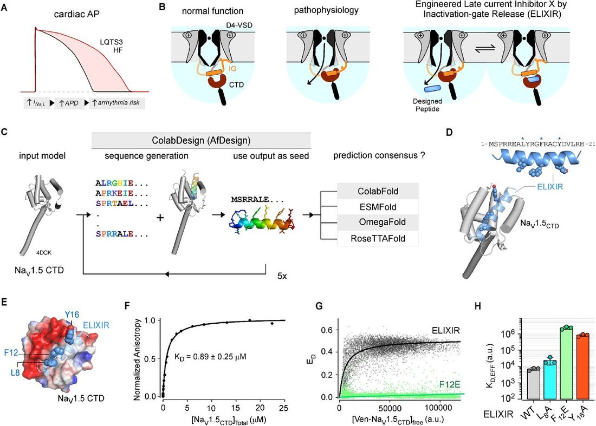
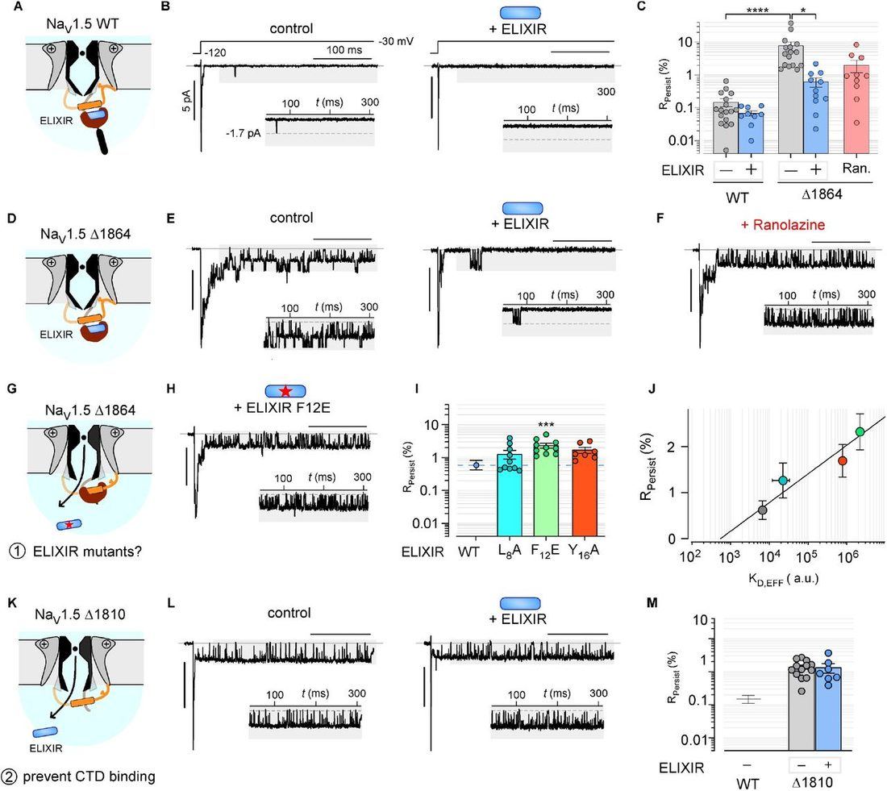
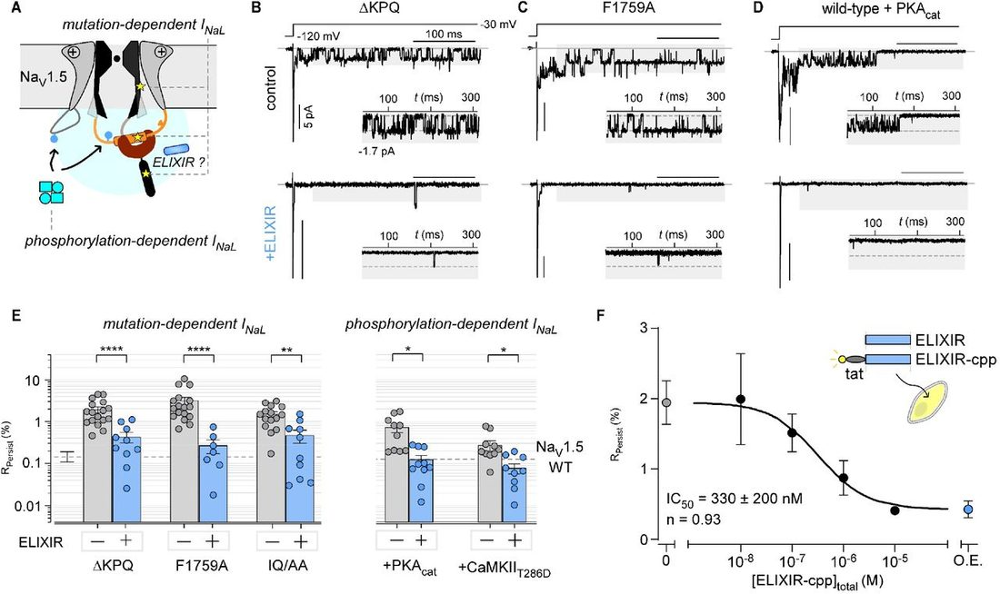
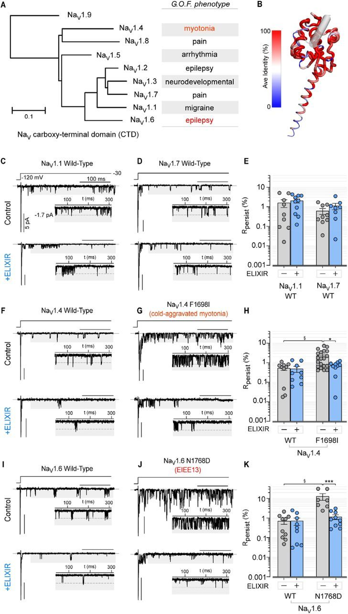
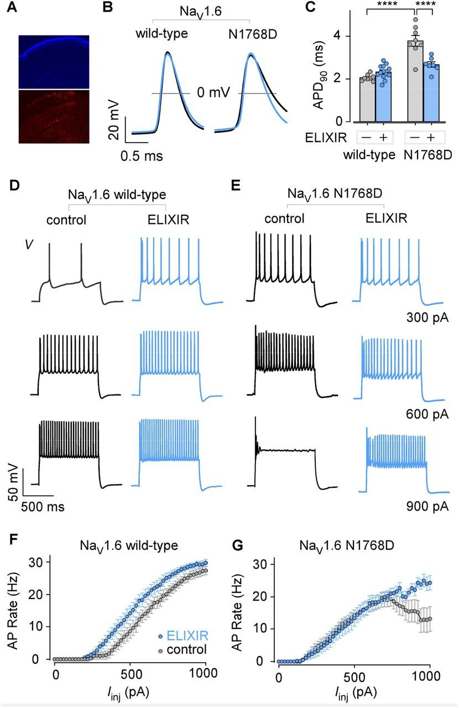
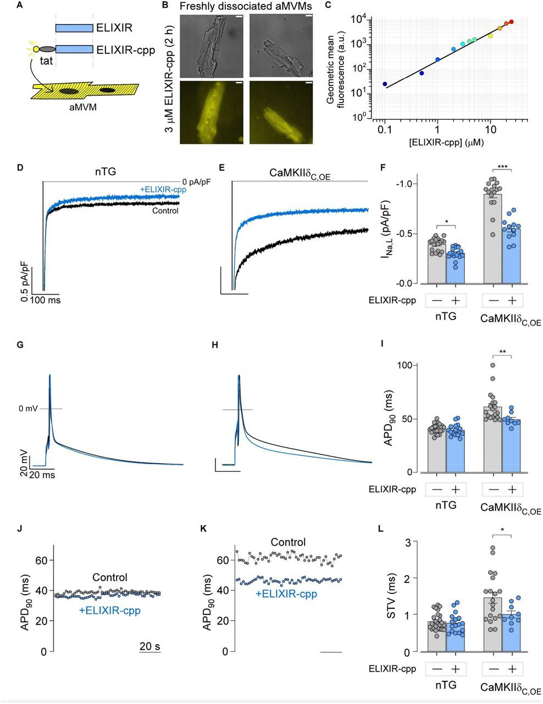
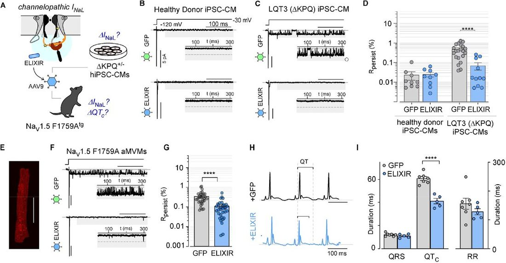

De novo design of a peptide modulator to reverse sodium channel dysfunction linked to cardiac arrhythmias and epilepsy
Summary
Ion channels orchestrate electrical signaling in excitable cells. In nature, ion channel function is customized by modulatory proteins that have evolved to fulfill distinct physiological needs. Yet, engineering synthetic modulators that precisely tune ion channel function is challenging. One example involves the voltage-gated sodium (Na V ) channel that initiates the action potential, and whose dysfunction amplifies late/persistent sodium current ( I NaL ), a commonality that underlies various human diseases including cardiac arrhythmias and epilepsy. Here, using a computational protein design platform, we engineered a de novo peptide modulator, ELIXIR, that binds Na V channels with submicromolar affinity. Functional analysis revealed an unexpected selectivity in inhibiting ‘pathogenic’ I NaL and confirmed its effectiveness in reversing Na V dysfunction linked to both cardiac arrhythmias and epilepsy in cellular and murine models. These findings exemplify the efficacy of de novo protein design for engineering synthetic ion channel modulators and sets the stage for rational design of future therapeutic approaches.
Introduction
Ion channels are pore-forming proteins that serve as nature’s transistor 1 . Unlike their silicon counterparts, ion channel activity is dynamic and tightly regulated, allowing cells to adapt their electrical properties to match the complex requirements of life. Indeed, ion channel dysfunction underlies life-threatening human diseases including cardiac arrhythmias 2 - 4 and epilepsy 5 , and well as myotonia 6 , migraines 7 , and intellectual disability 8 . For many voltage-gated ion channels, pathophysiological changes in channel function result in altered channel dynamics that disrupt overall electrical signaling. As such, strategies to precisely tune ion channel function are highly desired; yet current approaches, including small-molecule pharmacology, are limited and often have off-target effects 9 , 10 . In nature, the functional plasticity of ion channels, a defining feature of these proteins, is often attained through association with diverse auxiliary subunits or regulatory proteins that have evolved to fine tune specific channel properties 11 . Structural studies over the past several decades have furnished an unprecedented atomistic view of such interactions and shed light onto mechanisms of regulation 12 - 15 . Yet, rational engineering of de novo or synthetic ion channel modulators with high specificity has remained intractable.
A prominent example of this deficiency involves the family of voltage-gated sodium channels (Na V 1.1-1.9) which are responsible for the generation and propagation of action potentials (APs) in excitable cells, including cardiomyocytes and neurons. A hallmark of Na V channel function is the fast activation and inactivation that drives the rapid depolarization of many excitable cells, including neurons and muscle cells. Disruption of Na V channel function is linked to a broad spectrum of clinical phenotypes, including cardiac arrhythmias, congenital myotonia, epilepsy, neurodevelopmental disorders and painful neuropathies. Despite their distinct etiology, many of these disorders are linked to deficits in channel inactivation that can contribute to sustained Na + influx, referred to as either late or persistent Na + current ( I NaL ). Two prominent examples involve the SCN5A gene, which encodes Na V 1.5 in the heart, and the SCN8A gene, which encodes Na V 1.6 in the nervous system. Specifically, gain-of-function (GoF) human variants in Na V 1.5 that upregulate I NaL are linked to arrhythmogenic long-QT syndrome 3 (LQT3) 16 , and atrial fibrillation 2 . Similarly, pathological remodeling associated with heart failure (HF) 3 or following myocardial ischemia 17 , has been shown to modify Na V 1.5 function and elevate I NaL , resulting in an increased risk of cardiac arrhythmias. Increased I NaL causes a proarrhythmic prolongation of the AP 4 , 18 , 19 ( Figure 1A ) and disrupts Na + and Ca 2+ homeostasis, which sets off a vicious and detrimental cycle involving CaMKII, ROS, and RyR 20 . Similarly, in the nervous system, GoF Na V 1.6 variants are linked to severe developmental epilepsies and sudden unexpected death in epilepsy (SUDEP) 21 . These variants disrupt sodium channel inactivation and alter neuronal action potential properties, to ultimately drive neuronal network hyperexcitability.

Beyond cardiac and epileptic disorders, increased I NaL through related channels expressed in skeletal muscle or the peripheral nervous system is associated with congenital myotonia 6 and pain disorders 22 , pointing to the potential utility of I NaL inhibitors. Despite advances in the understanding of pathophysiological mechanisms and the availability of high-resolution structures 23 , 24 , devising effective strategies to reverse pathophysiological changes in Na V function has been limited. The prevailing approach has been small molecule I NaL blockers such as Ranolazine, which show promise. However, these drugs primarily target a common antiarrhythmic drug binding site in the transmembrane region, which may variably inhibit peak Na + current or block other ion channels 9 . In addition, these small molecules may also have reduced affinity for disease-linked mutant channels, limiting their potential utility. Recently, certain auxiliary proteins, such as the intracellular fibroblast growth factor homologous factors (iFGF/FHF), have been shown to inhibit I NaL with minimal effects on peak Na current 25 , 26 . Additionally, peptides derived from iFGF/FHF have been shown to be sufficient to recapitulate these effects 26 . Even still, despite optimization, these peptides are comparatively large and show reduced efficacy for certain channel variants. To this end, major advances in machine-learning based computational protein design have increased the accuracy of de novo protein design while simultaneously reducing computational time 27 - 29 . These emerging methods may provide an alternative strategy to rationally design peptide modulators that precisely modify Na V function. If substantiated, these approaches may be generalized to engineer a toolkit of synthetic ion channel regulators.
With cardiac Na V 1.5 as a template, we used de novo protein design to generate a peptide modulator that selectively inhibits pathogenic I NaL by enhancing a native mechanism of channel inactivation. To do so, we implemented a protocol for peptide hallucination within the ColabDesign framework 30 , 31 and leveraged this to generate a short 21-aa peptide targeting the Na V 1.5 carboxy-terminal domain (CTD), an intracellular channel domain that serves as a regulatory hub. In vitro binding analysis confirmed the interaction of the candidate peptide with the Na V 1.5 CTD. In depth electrophysiological analysis confirmed the functionality of the de novo designed peptide and revealed an unexpected selectivity of the designed peptide for pathogenic I NaL of multiple members of the Na V channel family. We further demonstrate the effectiveness of this peptide in both neuronal and cardiac disease models. Our findings highlight the utility of de novo protein design in the development of synthetic ion channel modulators that tune specific aspects of ion channel function in physiology and pathophysiology.
Results
A rational approach to developing an I NaL inhibitor with submicromolar affinity
Fast inactivation of Na V channels is a multistep process involving distinct channel elements. Following depolarization, movement of voltage-sensing domains (VSDs) I-III couples to pore opening, while that of the domain IV VSD initiates conformational changes that result in inactivation 32 - 34 . Of particular importance for the latter is the inactivation gate (IG, linker between domains III and IV), which contains the IFM motif that binds to a site near the channel pore to halt Na + influx 35 , 36 ( Figure 1B ). In addition to this pore-proximal site, the IG also binds an acidic EF-hand like region (EFL) in the C-terminal domain (CTD) of the channel 37 - 40 , suggesting that the IG may first need to be released from this EFL site to interact with the pore-proximal site and prevent pore opening ( Figure S1A ). In cardiac pathologies, this process is disrupted resulting in decreased Na V 1.5 inactivation and increased I NaL 4 , 19 , suggesting reduced occupancy of the pore-proximal site by the IG ( Figure S1B ). Given this, we reasoned that dislodging the IG from its CTD interaction site would promote Na V inactivation, and in so doing, reduce I NaL and AP duration (APD, Figure 1B , S1C ). To do so, we used a ColabDesign 31 based protocol to generate a peptide targeting the EFL of the Na V 1.5 CTD as depicted in Figure 1C . This process yielded a small (21 aa) peptide with features reminiscent of the Na V 1.5 IG (hydrophobic surface flanked by basic residues, consistent with it being able to bind the hydrophobic cleft in the EFL of the Na V 1.5 CTD ( Figure 1D-E ). Given its putative mechanism, we termed this peptide, Engineered Late-current I nhibitor X by I nactivation-gate Release (ELIXIR). As an initial means of testing our designed sequence we compared models of the ELIXIR-Na V 1.5 CTD (aa 1773 – 1940, Na V 1.5 CTD ) complex generated with several structure prediction algorithms 27 , 41 - 43 ( Figure S2A ). In all models, the Na V 1.5 EFL and IQ motif adopted a nearly identical architecture (backbone RMSD ∼ 1.58A) to that observed in crystallographic structures 44 - 46 ( Figure S2A ), lending credence to the predicted structures. In each, ELIXIR binds to the Na V 1.5 EFL in an identical orientation. The interface between ELIXIR and Na V 1.5 EFL was highly similar across the models, with peptide residues L8, F12, and Y16 making numerous close contacts to residues in the hydrophobic cleft of the EFL ( Figure S2A – S2I ). In addition to this, ColabFold models of the Na V 1.5 CTD-CaM-Na V 1.5 IG complex in the absence and presence of ELIXIR show ELIXIR bound to the EFL in place of the IG ( Figure S2J ), suggesting it can displace the IG from this site. Comparison of our designed peptide sequence to that of the Na V 1.5 IG revealed that they are only ∼24% identical ( Figure S3A ), indicating that our designed sequence was not merely recapitulating the native ligand of the Na V 1.5 EFL. Indeed, when the sequence was searched against the BLAST database 47 , the closest homolog was the 50S ribosome of the algae Nannochloropsis gaditana which showed only ∼52% identity ( Figure S3A ). The closest mammalian homolog, having ∼33% identity, was DNA replication factor CDT1 of the Weddell seal ( Leptonychotes weddellii , Figure S3A ). A single conservative substitution was made to the sequence (C15S) to simplify in vitro applications of ELIXIR. Having confirmed that the ELIXIR sequence was both de novo and foreign to Na V 1.5, we examined whether it binds directly to the channel CTD. Equilibrium titrations of a fluorescein-tagged ELIXIR with the Na V 1.5 CTD , monitored through fluorescence anisotropy, displayed saturable binding and revealed that ELIXIR binds the Na V 1.5 CTD in vitro with a submicromolar affinity ( K D = 0.89 ± 0.25 μM, Figure 1F ). To ensure that ELIXIR can associate with the Na V 1.5 CTD in the complex milieu of living cells, we undertook a flow-cytometry based FRET 2-hybrid assay. Co-expression of Cerulean-tagged ELIXIR, a FRET donor, and Venus-tagged Na V 1.5 CTD , a FRET acceptor, resulted in robust FRET confirming that the Na V 1.5 CTD binds ELIXIR in mammalian cells ( Figure 1G ). We sought to further validate the interface between ELIXIR and Na V 1.5 CTD. As L8, F12, and Y16 of ELIXIR were predicted to make many close contacts with residues in the hydrophobic cleft of the Na V 1.5 CTD EFL ( Figure 1E ), we reasoned that the substitution of these aliphatic residues with alanine (L8 and Y16) or glutamate (F12) would disrupt the ELIXIR-Na V 1.5 CTD interaction. Consistent with this expectation, FRET 2-hybrid analysis showed that each mutant diminished binding, albeit to different degrees ( Figure 1G-1H , S3B-C) . Collectively, these results demonstrate that de novo designed ELIXIR peptide interacts with Na V 1.5 CTD and may be positioned to tune channel function.
ELIXIR decreases I NaL of a Na V 1.5 channelopathic variants
Thus affirmed, we sought to determine the functional consequences of ELIXIR interaction on Na V 1.5 channel function. Whole-cell patch-clamp recordings demonstrated that co-expression of ELIXIR did not significantly alter channel activation, inactivation, or recovery from inactivation of wild-type Na V 1.5 ( Figure S3D – S3G ). To probe whether ELIXIR inhibits pathological I NaL , we conducted cell-attached multichannel recordings of HEK293 cells heterologously expressing either wild-type Na V 1.5 or a disease-linked non-sense variant that truncates the channel CTD (Δ1864). As the channel unitary current is larger than instrument noise, multichannel recordings allow us to quantify peak current and simultaneously detect rare late channel openings in the context of an intact cell, as established previously 25 , 26 , 48 . We quantified I NaL as R persist , the ratio of average open probability ( P O ) following 50 ms of depolarization normalized to the peak P O . As in previous studies 25 , 26 , 48 , wild-type Na V 1.5 exhibited a low baseline level of I NaL , which was minimally perturbed by co-expression of ELIXIR ( Figure 2A-C , S4A ). By contrast, the Δ1864 mutant showed greatly (∼40-fold) elevated I NaL at baseline, consistent with the pathogenicity of this variant ( Figure 2C-E , S4B ). Strikingly, ELIXIR co-expression evoked a greater than 12-fold reduction in I NaL of the mutant channel. To ensure that the C15S substitution we introduced into ELIXIR did not affect its efficacy as an I NaL inhibitor, we also probed the unmodified sequence ( Figure S4C-D ). Both peptides caused a nearly identical reduction in the I NaL of Na V 1.5 Δ1864 ( Figure S4E ). In native tissue, Na V channels function as multi-subunit complexes that include auxiliary β -subunits, which have been reported to modulate I NaL 49 , 50 . As such, we investigated whether ELIXIR could inhibit I NaL in the presence of β -subunits. In the presence of β1 and β4, ELIXIR had minimal effects on the I NaL of wild-type Na V 1.5 ( Figure S4F-J ) However, expression of β1 and β4 with the Δ1864 mutant yielded a baseline reduction in I Na,L , which was further reduced by the addition of ELIXIR ( Figure S4F-J ). Ranolazine, is a well-established clinically used small molecule I NaL inhibitor that interacts with Na V 1.5 through the antiarrhythmic drug (AAD) binding site within the transmembrane segment 24 . We found that incubation with 10 μM ranolazine caused an ∼4-fold reduction in I NaL of Na V 1.5 Δ1864 ( Figure 2C, 2F , S5A ). These findings establish the biological activity of the computationally designed ELIXIR peptide and highlight its effectiveness.

Having confirmed its functionality, we sought to further investigate whether the change in I NaL observed with ELIXIR results from its bona fide interaction with Na V 1.5 CTD. To do so, we first examined how mutations of key ELIXIR residues that weaken binding to the Na V 1.5 CTD alter functional inhibition of I NaL ( Figure 2G ). We found that F12E strongly diminished I NaL inhibition, while Y16A and L8A evoked partial effects ( Figure 2H-I , S5B-S5F ). Quantitative analysis revealed a correlation between the level of I NaL ( R persist ) and the relative dissociation constant determined by FRET analysis ( Figure 2J ), pointing to the functional importance of the ELIXIR -Na V 1.5 CTD interaction. Second, we reasoned that deletion of the ELIXIR binding site (i.e. the EFL) would abolish I NaL inhibition by ELIXIR. To test this, we considered the channelopathic Na V 1.5 Δ1810 variant, which encodes only the first helix of the EFL ( Figure 2K ). As with the Δ1864 mutant, Na V 1.5 Δ1810 showed a markedly increased basal I NaL relative to the wild-type channel ( Figure 2L-M , S5G ). However, unlike Na V 1.5 Δ1864, co-expression of ELIXIR had virtually no effect on I NaL ( Figure 2L-M , S5G ). Together, the reduced efficacy of ELIXIR mutants in inhibiting I NaL , and the inability of ELIXIR to inhibit I NaL of Na V 1.5 Δ1810 suggest that ELIXIR interacts with holo-Na V 1.5 via an interface similar to that predicted in the models of the ELIXIR-Na V 1.5 CTD complex.
ELIXIR is a general inhibitor of Na V 1.5 I NaL
At the molecular level, a variety of perturbations to Na V 1.5 contribute to pathogenic increases in I NaL . These include variants distributed throughout the channel sequence and post-translational modifications, such as phosphorylation, that are associated with cardiac pathologies including heart failure 51 . Our results with Na V 1.5 Δ1864 suggest that ELIXIR is a potent inhibitor of I NaL ; thus, we sought to determine its generality in tuning I NaL triggered by distinct mechanisms. Accordingly, we assessed the efficacy of ELIXIR in inhibiting I NaL of several Na V 1.5 mutations located in distinct channel domains. These included: (1) the ΔKPQ varint linked to LQT3, (2) a mutation (F1759A) in the classic AAD binding pocket linked to atrial fibrillation 2 , and (3) a structure-guided mutation (IQ/AA) engineered to block binding of the auxiliary protein calmodulin ( Figure 3A ). These mutations were selected as they represent disparate structural mechanisms that can contribute to increased I NaL in cardiac pathologies. Consistent with our previous results 26 , when expressed alone, each of these Na V 1.5 mutants displayed an elevated I NaL (21-fold F1759A; 13-fold ΔKPQ; 10-fold IQ/AA) relative to the wild-type channel ( Figure 3B – 3C,3E , S6A-S6D ). For each Na V 1.5 mutant, co-expression of ELIXIR resulted in a statistically significant decrease in I NaL , with reductions ranging from 12-fold (F1759A) to 3-fold (IQ/AA) ( Figure 3B – 3C,3E , S6A-S6D ).

Post-translational modification of Na V 1.5 also contributes to elevated I NaL and is associated with increased risk of arrhythmia in both heart failure 51 , 52 and myocardial ischemia 53 , 54 . To determine whether ELIXIR inhibits phosphorylation-dependent I NaL , we co-expressed wild-type Na V 1.5 with the PKA catalytic subunit (PKA cat ) or a constitutively activated Ca 2+ /CaM-dependent kinase II mutant (CaMKII T286D ). In both cases, we observed an increase in basal I NaL (∼5-fold with PKA Cat or ∼ 2-fold with CaMKII T286D ) ( Figure 3D-3E , S6E-S6G ). Co-expression of ELIXIR sufficed to reverse the PKA cat and CaMKII T286D -dependent enhancement of I NaL ( Figure 3D-3E , S6E-S6G ). The ability of ELIXIR to inhibit I NaL stemming from a wide range of molecular alterations (i.e., mutations in distinct channel domains and post-translational modifications) indicates that it may be generalizable and further highlights its potential utility.
We next examined the dose-dependence of I NaL inhibition by ELIXIR. To facilitate intracellular delivery of ELIXIR, we synthesized it as a peptide fused to the cell-penetrating region of the transduction domain of HIV-1 trans activator of transcription and an N-terminal fluorescein (ELIXIR-cpp). We incubated HEK293 cells transfected with Na V 1.5 ΔKPQ with various concentrations of ELIXIR-cpp for 4 hours and measured I NaL ( Figure 3F , S6H-S6K ). We found that ELIXIR decreased the I NaL of Na V 1.5 ΔKPQ in a dose-dependent manner with an IC50 (∼ 330 nM ± 230 nM (95% CI), Figure 3F ), similar to the in vitro affinity of ELIXIR for the Na V 1.5 CTD .
ELIXIR preferentially tunes “pathological” I NaL
The nine Na V isoforms (1.1 – 1.9) are well known to have distinct inactivation properties that are critical for their physiological functions 55 . GoF variants in multiple Na V isoforms are linked to diverse clinical phenotypes, including epilepsy 21 , myotonia 6 , neurodevelopmental disorders 56 , and chronic pain 22 ( Figure 4A ). The high homology of the CTD ( Figure 4B ) suggests that ELIXIR may interact with each Na V isoform. Consistent with this, in ColabFold 41 generated models ELIXIR was predicted to adopt a highly similar binding pose with the EFL of Na V 1.1 - 1.9 ( Figure S7A-S7H ). Accordingly, we sought to determine the effect of ELIXIR on I NaL of selected wild-type Na V channels expressed in distinct tissues: (1) Na V 1.1 in neurons, (2) Na V 1.4 in skeletal muscle, (3) Na V 1.6 in neurons, and (4) Na V 1.7 in peripheral nervous system neurons. When expressed in HEK293 cells, these channels exhibited varying amplitudes of I NaL , with R persist values ranging from ∼0.5% (Na V 1.4) – 1.6% (Na V 1.1). Co-expression of ELIXIR failed to evoke a statistically significant change in the basal I NaL of any of the wild-type Na V isoforms examined: Na V 1.1 ( Figure 4C,E and S7I ), Na V 1.7 ( Figure 4D-E and S7J) , Na V 1.4 ( Figure 4F, 4H and S7K) , and Na V 1.6 ( Figure 4I, 4K and S7M )

Thus affirmed, we probed whether ELIXIR could modulate I NaL of mutant channels that have deficits in inactivation (i.e. if the IG has reduced propensity for occupying the pore-proximal site). In this regard, increased I NaL of Na V 1.4 is considered a relevant pathophysiological mechanism for congenital myotonia 6 . To probe this possibility, we investigated the effect of ELIXIR on the I NaL of an Na V 1.4 variant (F1698I) associated with cold-aggravated myotonia in humans 57 , 58 . When expressed alone, Na V 1.4 F1698I had a small (∼4-fold) but statistically significant increase in R persist compared to wild-type Na V 1.4 ( Figure 4F-4H , S7K-S7L ). Co-expression of ELIXIR reversed I NaL of the mutant channel to near wild-type levels ( Figure 4F-4H , S7L ), despite the wild-type channel being unperturbed by ELIXIR.
Gene variants in voltage-gated sodium channels are a leading cause of monogenic epilepsies 59 . Variants in SCN8A , encoding Na V 1.6, often increase neuronal excitability by impairing inactivation and increasing I NaL 21 , 60 , 61 . Consistent with previous findings 21 , 62 - 64 , analysis of an Na V 1.6 variant (N1768D) linked to epilepsy and seizure disorders showed a markedly elevated I NaL as compared to the wild-type channel ( Figure 4I-K , S7M-S7N ). Strikingly, we found that co-expression of ELIXIR reduced I NaL (∼10-fold) of Na V 1.6 N1768D to near wild-type levels ( Figure 4I-4K , S7M-S7N ). These findings suggest that although ELIXIR may bind multiple Na V isoforms, its inhibition of I NaL is most prominent only when there are defects in the inactivation process. This feature may allow ELIXIR to preferentially modulate mutant or pathologically modified channels which could be advantageous.
ELIXIR reverses altered neuronal excitability linked to Na V 1.6 channelopathy
As ELIXIR potently inhibited the I NaL of the Na V 1.6 N1768D variant, we next considered whether ELIXIR was able to rect ify the alteration of neuronal AP properties associated with this variant 64 . To do so, we tested the effect of ELIXIR in a mouse model of neurodevelopmental disorder expressing the Na V 1.6 N1768D variant 65 . Previous studies have shown that these mice develop seizures and present with SUDEP 65 , consistent with clinical phenotypes 21 . Moreover, these mice display aberrant neuronal AP spike properties, including AP prolongation, spike frequency adaptation, and depolarization block, reflecting an increased I NaL in various neuronal subtypes 63 , 64 , 66 , 67 . For this, we packaged ELIXIR, and an mCherry expression reporter, into an AAV9 vector and used intracerebroventricular injection to deliver this AAV to cortical neurons of P0 N1768D homozygous knockin ( SCN8A N1768D/N1768D ) and wild-type littermate control (SCN8A +/+ ) mice. We then targeted layer V pyramidal neurons for whole cell patch clamp electrophysiology recordings in brain slices. Fluorescence imaging confirmed expression of ELIXIR ( Figure 5A ). Comparison of wild-type and N1768D neurons confirmed a prolongation of the APD ( Figure 5B , S8A-S8B ), due to slowing of the repolarizing phase ( Figure S8C-S8D ) 64 . ELIXIR positive neurons in N1768D slices exhibited a significantly reduced APD compared to ELIXIR negative N1768D neurons ( Figure 5B-C ; S8B ). The APs of wild-type neurons were found to be insensitive to ELIXIR ( Figure 5B-C ; S8B ). Analysis of AP properties showed a small change in AP firing rate in neurons from wild-type mice upon ELIXIR expression ( Figure 5D,5F , S8E ). By contrast, neurons from N1768D mice displayed premature depolarization block, which may contribute to disease phenotypes in SCN8A neurodevelopmental disorders 67 , that was significantly attenuated by ELIXIR expression ( Figure 5E, 5G , S8E-S8F ). These results reveal that expression of ELIXIR is effective at reversing the altered neuronal AP properties observed in Na V 1.6 GoF channelopathies linked to epilepsy.

ELIXIR reduces I NaL and APD 90 of CaMKII δ C,OE ventricular myocytes
In HF, phosphorylation of Na V 1.5 by CaMKII results in elevated I NaL , which contributes to increased risk of cardiac arrhythmias 51 , 52 , 68 . As such, we examined whether ELIXIR may reverse pathological I NaL in adult mouse ventricular myocytes (aMVMs) isolated from a transgenic mouse model that overexpress the predominant cardiac CaMKII isoform (CaMKII δ C,OE ) 69 . Previous studies have shown that overexpression of CaMKII δ C sufficed to induce cardiac hypertrophy and dilated cardiomyopathy leading to arrhythmogenic HF and premature death in these mice 69 , 70 . Indeed, we observed morphological and electrophysiological changes in the hearts and cardiomyocytes of the CaMKII δ C,OE mice ( Figure S9A – S9F ) that were indicative of hypertrophy, and consistent with HF. We utilized ELIXR-cpp for short-term intracellular delivery of ELIXIR into aMVMs ( Figure 6A , ELIXIR-cpp). Flow cytometric analysis of non-transgenic (nTG) aMVMs treated with ELIXIR-cpp showed a concentration-dependent increase in FITC fluorescence intensity ( Figure 6B-C ), confirming uptake of ELIXIR-cpp by the myocytes. As in previous studies, I NaL was quantified through whole-cell patch-clamp recordings as the magnitude of Na + current following 500 ms of depolarization normalized to the whole-cell capacitance. In line with previous studies 68 , the CaMKII δ C,OE aMVMs displayed a 2-fold increase in I NaL relative to aMVMs from nTG animals ( Figure 6D-F ). Application of ELIXIR-cpp caused a small but statistically significant reduction in the I NaL of nTG myocytes ( Figure 6D-F ). By comparison, incubation with ELIXIR-cpp had a much stronger effect on the I NaL of CaMKII δ C,OE aMVMs, which was reduced to near wild-type levels ( Figure 6E-F ).

To further probe the potential functional consequences of ELIXIR-cpp on cardiomyocyte function, we undertook current clamp recordings to quantify changes in AP morphology. Consistent with the increase in I NaL , the AP duration (APD) of CaMKII δ C,OE myocytes was significantly prolonged relative to that of nTG myocytes ( Figure 6G–I ). In addition to this, myocytes from the CaMKII δ C , OE mice had greater variability in the APD, quantified as short-term variability 71 , 72 (STV, Figure 6J–L ), than those from nTG animals consistent. Remarkably, application of ELIXIR-cpp yielded a significant reduction in the APD ( Figure 6H-I ) and STV ( Figure 6K-L ) of aMVMs from CaMKIId C , OE mice, reversing both to near nTG levels. By comparison, application of ELIXIR-cpp caused essentially no change in APD or STV of nTG aMVMs. Collectively, these findings illustrate the ability of ELIXIR, applied extracellularly as a peptide, to tune native channel function.
ELIXIR Inhibits I NaL in LQT3 patient derived iPSC-CMs
While ELIXIR-cpp allows for short-term modification of Na V function in cardiomyocytes, constitutive expression of ELIXIR may be advantageous in pathophysiological settings. As such we used AAV9 to express ELIXIR in two cardiac disease models: (1) human cardiomyocytes differentiated from induced pluripotent stem cells (hiPSC-CMs) and (2) transgenic mice expressing a mutant Na V 1.5 (F1759A tg ) ( Figure 7A ).

First, we considered hiPSC-CMs derived from an LQT3 patient heterozygous for the Na V 1.5 ΔKPQ variant 26 , as well as those from a healthy donor (HD) 73 . Following differentiation and maturation, spontaneous contractions were observed in both the HD and ΔKPQ hiPSC-CMs. Multichannel recordings of the HD hiPSC-CMs revealed low baseline levels of I NaL , that were minimally altered by AAV9-mediated expression of ELIXIR ( Figure 7B , S9G ). By contrast, the ΔKPQ hiPSC-CMs exhibited markedly increased (∼60-fold) I NaL ( Figure 7C-D , S9H ). Following transduction with ELIXIR, a ∼7-fold reduction in I NaL was observed in the ΔKPQ hiPSC-CM ( Figure 7C-D , S9H ). This underscores the efficacy of ELIXIR in diminishing I NaL linked to LQT3 variants in the more pathophysiologically relevant setting of human cells.
Second, we considered a transgenic mouse model that inducibly expresses the lidocaine-resistant Na V 1.5 F1759A mutant channel. These mice have been previously reported to have an elevated I NaL and prolonged QT interval 2 . Subcutaneous injection delivered an AAV9 encoding ELIXIR or GFP to P4 mice. Eight weeks after the injection of the virus, ventricular cardiomyocytes were isolated, and ELIXIR expression was confirmed by confocal imaging of mCherry fluorescence ( Figure 7E ). Multichannel recordings of cardiomyocytes from GFP-injected mice revealed the presence of late channel openings ( Figure 7F ), with an I NaL consistent with previous reports 25 . By comparison, cardiomyocytes from ELIXIR-injected animals showed a significantly attenuated I NaL compared to those from GFP control mice ( Figure 7F-7G ). As increased I NaL from Na V 1.5 manifests as a prolonged QT interval on the ECG and is the basis for LQT3 in humans, we obtained limb-lead surface electrocardiographic (ECG) recordings from both ELIXIR injected mice and GFP-control littermates ( Figure 7H ). QT intervals, corrected for heart rate using Mitchell’s formula (QT C ) 74 , were significantly shorter in the ELIXIR expressing mice than in the GFP-expressing control animals ( Figure 7I ). We observed no significant differences in the RR or QRS intervals ( Figure 7I ). Collectiv ely, these results confirm the effectiveness of long-term ELIXIR expression in tuning endogenous I NaL in both human and murine models of Na V 1.5 dysfunction.
Discussion
Strategies to precisely manipulate ion channel function are highly sought after both as tools for unraveling their physiological functions and for developing new therapies 75 . A prominent example of this is the family of Na V channels (Na V 1.1-1.9), where gain-of-function variants have been associated with a broad range of human diseases including cardiac arrhythmia 76 , myotonia 6 , and epilepsy 21 . Despite their varied clinical presentations, many of these diseases stem from a common deficit in Na V channel inactivation that leads to sustained Na + influx. By combining structural insights and a computational protein design framework, we developed a peptide modulator of Na V channels designed to promote inactivation, called ELIXIR. Our biochemical and electrophysiological analysis showed that ELIXIR binds to the Na V 1.5 CTD with submicromolar affinity and can modulate the “pathological” I NaL of multiple Na V isoforms. We further demonstrate the efficacy of this synthetic I NaL modulator to reverse pathophysiological changes in multiple disease models linked to Na V channel dysfunction. These findings suggest that ELIXIR could serve as a template for developing a new class of rationally designed Na V channel modulators and further highlight the potential utility of de novo protein design for custom engineering of ion channel modulators in health and disease.
Many ion channels are large membrane-spanning multi-subunit complexes, the gating of which is controlled by intricate conformational dynamics. Consequently, engineering of synthetic ion channel modulators with desired functional effects has been challenging. To date, the prevailing strategy has been largely empirical, and focused on repurposing known ion channel modulators 26 , 77 or developing synthetic nanobodies that interact with key channel domains 78 . Recently, major advances in computational protein design, particularly deep learning approaches, have improved accuracy while also reducing the required computational time 27-29,43,79 , suggesting that these methods may provide alternate avenues for developing novel ion channel modulators. Furthermore, the availability of open-source and easy-to-use platforms has increased the accessibility of these methods to the broader scientific community. While promising, experimental validation of de novo sequences generated by these algorithms and establishing their functionality in native biological settings has been challenging. For in silico designed de novo protein-binders, only a small number of targets have been tested in vitro 28 , 29 and even fewer in situ or in vivo 80 . Here, we focused on Na V 1.5 channels owing to their high pathophysiological relevance. We targeted the Na V 1.5 CTD , as this region has emerged as a regulatory hub that interacts with multiple auxiliary proteins to fine tune channel function. Furthermore, the Na V 1.5 CTD also contains a large hydrophobic pocket that provides an attractive interface for binder design. With the use of the design protocol described here, we were able to generate a de novo peptide sequence that binds the Na V 1.5 CTD and tunes a specific aspect of Na V 1.5 function (i.e. I NaL ) in heterologous expression systems, primary cardiomyocytes and in vivo . Our results highlight the applicability of these methods for developing novel ion channel modulators and lend further support to the general utility of currently available algorithms for targeting a wide array of proteins.
In the heart, multiple pathophysiological mechanisms have been linked to increased I NaL . These include: (1) human Na V 1.5 variants distributed across various channel domains 81 , (2) channel phosphorylation by CaMKII or PKA 51 , 52 , (3) reactive oxygen species (ROS) 52 or cellular metabolites 82 , (4) altered binding of channel interacting proteins 48,83-85 , and (5) diverse cell signaling mechanisms 86 - 88 . As such, considerable effort has been devoted to developing selective I NaL inhibitors. In this regard, class 1b antiarrhythmics (e.g. lidocaine and mexiletine), which bind with rapid kinetics to a transmembrane site in Na V 1.5, exhibit some preference for inhibiting I NaL 9 . Ranolazine, structurally similar to lidocaine, has been found to exhibit an even greater preference for inhibiting I NaL . High-resolution structures have been solved of Na V 1.5 bound to several of these antiarrhythmics 23 , 24 , and in each, the drug is bound to a nearly identical site in the channel pore. Importantly, this shared binding site likely limits the selectivity of these molecules for late versus peak Na + current as their interaction obstructs ion flux through the pore. Instead of targeting the pore domain, our approach was to leverage the natural inactivation mechanism of Na V channels. Specifically, we sought to promote inactivation by enhancing the release of the IG from the Na V 1.5 CTD through the application of a competitive binder to this site (ELIXIR). This strategy has two advantages. First, by not targeting the channel pore or the voltage-sensing domains, ELIXIR is unlikely to significantly perturb channel activation. Experimentally, we found that ELIXIR had minimal effect on peak current density and voltage-dependence of activation ( Figure S3D – S3F ). Second, ELIXIR is unlikely to exert substantial effects on channels that have no baseline defect in inactivation. Specifically, for wild-type channels, the DIV VSD movement is considered a rate-limiting step for both the development of and recovery from inactivation 34 . Without the movement of DIV VSD, it is unlikely that the pore-proximal site is available for interaction with the IFM motif. In this case, displacement of the IG by ELIXIR may not promote inactivation. One interesting possibility hinted at by our results is that in pathophysiological settings, the release of IG from the CTD may become a limiting step in addition to DIV VSD movement. As a result, promoting IG release by ELIXIR would be expected to boost inactivation. This aspect is potentially important as it could lend ELIXIR selectivity for tuning pathogenic I NaL . Experimentally, we found that ELIXIR had minimal effects on I NaL of unmodified wild-type Na V . channels. Nevertheless, ELIXIR was still effective at inhibiting I NaL resulting from (1) diverse Na V 1.X mutations ( Figure 3A – 3E , 4H, 4K ) and (2) channel phosphorylation by PKA or CaMKII ( Figure 3D-E ). A corollary is that the generality of ELIXIR activity on Na V s suggests that these seemingly distinct perturbations all converge on a common endpoint, the diminished ability of the IG to bind the pore-proximal site. For some Na V 1.5 perturbations examined, ELIXIR did not fully reverse the increase in I NaL . This partial inhibition could stem from incomplete disruption of the IG-CTD interaction by ELIXIR or may reflect other structural defects caused by these perturbations. Further optimization of ELIXIR through affinity maturation or the production of mutation-specific binders could help address these limitations. Of note, we recently found that the endogenous Na V channel interacting protein Fibroblast growth factor homologous factors (FHFs) inhibits I NaL in an isoform/splice-variant specific manner 26 . Based on this, we engineered a 39-amino acid FHF1 A fragment (FHF-inhibiting X-region, FixR) as an I NaL inhibitor. While the molecular mechanism by which FHFs/FixR reduce I NaL remains unclear, it appears likely that it is distinct from that of ELIXIR, as FHFs can promote inactivation of both the Na V 1.5 Δ1810 variant that lacks the ELIXIR-binding pocket and mutations that disrupt IG (IFM/IQM) 26 . As such, it is possible that the two peptides may be beneficial in different settings depending on the specific perturbations in channel function. Also, as FHFs are natively present in various tissues, the effectiveness of FixR may vary depending on the level of FHF expression. By contrast, ELIXIR as a de novo peptide could be more broadly applicable.
Beyond cardiac maladies, Na V channel malfunction has been implicated in a variety of diseases including epilepsy syndromes 64 , myotonia 6 , and chronic pain 22 . The high degree of sequence similarity in the Na V EFL suggests that ELIXIR may function as an I NaL inhibitor for channelopathies across the Na V family, an attractive possibility given the range of diseases associated with dysfunction of these channels ( Figure 4A-B ). Supporting this idea, we found that co-expression of ELIXIR was sufficient to reverse the increase in I NaL observed with both the Na V 1.4 F1698I variant linked to a cold-aggravated myotonia as well as the well-studied Na V 1.6 N1768D variant linked to epilepsy ( Figure 4F – 4K ). Consistent with previous studies 21 , 63 , 64 , slice electrophysiological recordings layer V cortical neurons from homozygous N1768D mice showed changes in key AP properties of including slower repolarization of the AP and increased presence of depolarization block ( Figure 5 ). Viral expression of ELIXIR was sufficient to partially reverse these changes in neuronal AP morphology and excitability, pointing to the potential effectiveness of ELIXIR in the nervous system. More broadly, the Na V CTD has an architecture similar to the C-termini of other ion channels, including the voltage-gated calcium channels 15 and the sodium leak channel NALCN 14 . In high-resolution structures of these channels, the EFL region of the CTD is bound to the domain III – domain IV linker 14 , 15 , hinting at conserved modulatory mechanisms. If so, our design strategy may be broadly effective for developing selective actuators of this physiologically important channel superfamily.
Three key limitations merit further attention. First, a high-resolution structure of ELIXIR bound to an Na V channel is not available. Nevertheless, structural predictions of ELIXIR/CTD complexes by various algorithms all converge to a nearly identical interface. Experimentally, the mutational analysis of ELIXIR residues was consistent with the predicted interface. Second, although peptides are used clinically (e.g. semaglutide and insulin), the specific translational application of ELIXIR may be impaired by the requirement for intracellular delivery. Our studies utilized two possible approaches, namely fusion to a cell-penetrating peptide and viral delivery of ELIXIR. Both approaches were effective for robust delivery and reversal of I NaL in different settings. Nevertheless, these strategies have potential limitations for translational applications including immunogenicity. Other emerging protein delivery approaches may also be beneficial for ELIXIR. Future studies will address these possibilities and assess the effectiveness of potential intracellular delivery mechanisms. Alternatively, it may be possible to identify small molecules that interact with the IG-binding pocket of an Na V 1.x CTD and mimic the action of ELIXIR. In this regard, the change in fluorescence anisotropy with ELIXIR may be advantageous for establishing in vitro high-throughput screens. Third, with viral expression of ELIXIR, we were unable to estimate a concentration as the mCherry marker is bicistronically expressed. It is possible that the concentration of ELIXIR may be supramaximal, which may cause off-target effects. Future in vivo studies will consider the dose-dependence of ELIXIR expression.
Although ion channel dysfunction has been long associated with various life-threatening diseases, these proteins have often been considered challenging targets for drug development 89 . A key difficulty is that in pathophysiology, the functional change often involves alterations in dynamic channel behavior that disrupts cellular excitability. As such, simply turning an ion channel on or off is often insufficient. Our results demonstrate the effectiveness of computational protein design for the development of synthetic proteins/peptides that tune channel dynamics. This ability could turbocharge the creation of innovative strategies to directly target the pathophysiology of multiple channelopathies and enable precision engineering of nature’s transistors.
Materials and Methods
Molecular biology
The human Na V 1.5 sequence used in this work corresponds to GenBank accession number M77235.1 and was expressed from a pGW vector, as described previously 26 . The IQ/AA mutation in the channel CTD and ΔKPQ mutation in the inactivation gate were generated using overlap-extension PCR followed by ligation into the NruI and XbaI, and KpnI and XbaI restriction sites, respectively. The Δ1864 truncation was made by PCR amplifying the relevant segment using a forward primer upstream of the KpnI site and reverse primer that truncated at position 1864, which included an XbaI site for ligation into the Na V 1.5/pGW construct. A gene fragment containing the DNA sequence of the designed peptide (MSPRREALYRGFRACYDVLRH) was purchased from Synbio technologies and subcloned into a pIRES2-eGFP vector using the NheI and BamHI restriction sites. For FRET experiments the Venus-tagged Na V 1.5 CTD (Na V 1.5 residues 1771-2016) and Cerulean-tagged ELIXIR (WT, L8A, F12E, and Y16A) were expressed from a pCDNA3 vector. The PKA catalytic domain and CaMKII T286D were expressed from a pCDNA3.1 plasmid as previously reported 90 . The WT Na V 1.1, Na V 1.4, Na V 1.6, and Na V 1.7 were expressed from pIR-CMV-IRES-mScarlet, pCDNA3.1, pCDNA4TO-IRES-mScarlet, and pCMV plasmids, respectively. For bacterial overexpression and purification, the Na V 1.5 CTD (Na V 1.5 residues 1773-1940) was expressed as a GST-fusion inserted between the BamHI and XhoI sites of a pGEX-6P vector. Calmodulin was cloned into a pRSF plasmid using the NcoI and XhoI sites. QuickChange mutagenesis was used to substitute the single cystine residue (C15) with a serine to generate the final ELIXIR peptide sequence (MSPRREALYRGFRASYDVLRH), to produce the binding-deficient ELIXIR mutants (L8A, F12E, Y16A) and the Na V 1.6 N1768D mutant channel.
Peptide design
Peptide design was done using the AfDesign algorithm implemented in ColabDesign 31 . The coordinates for the Na V 1.5 CTD were taken from an x-ray crystallographic of the Na V 1.5 CTD bound to calmodulin and FHF2 U (PDB ID: 4DCK) 44 . For the first round of design, residues 1786 - 1802 and 1850 - 1887 of Na V 1.5 were used as a hotspot, the binder length was set to 21 residues, and the number recycles, and models used were 1 and 2, respectively. The design protocol was then run with a semi-greedy optimizer (pssm_semigreedy) and the default gradient decent settings. The pssm_semigreedy protocol starts by optimizing, via gradient descent, a softmax representation of the sequence. This is done for 120 steps. This results in a vector of shape binder length (21) that we call PSSM (position specific scoring matrix), which represents the probability of each amino acid at each position. For the starting sequence, the amino acid at each position is selected that maximizes the probability. For the semi-greedy protocol, at each step, 10 independent mutations are evaluated and the mutation with best loss is fixed. The positions are sampled following 1-pLDDT 91 and the amino acid identity following PSSM. This is done for 32 steps. The sequence with best loss across the 32 steps is selected. The loss combines pLDDT over the binder positions plus contact score: 0.1 * (1-pLDDT) + 1.0 * contact score. The contact score minimizes the entropy of the distogram output (distance distribution between c β atoms) between the target and the peptide. More specifically, every peptide position must have at least one confident distance prediction to any target position, unless a hotspot is defined. The protocol is available via Google Colab at: https://colab.research.google.com/github/sokrypton/ColabDesign/blob/v1.1.1/af/examples/peptide_binder_design.ipynb . Following the first round of design, the final peptide sequence was used as a seed to initialize the next round. This process was repeated a total of five times. The peptide sequence was then screened computationally by comparing the interface between the Na V 1.5 CTD and the peptide in models of the complex generated with ColabFold 41 , ESMFold 42 , OmegaFold 27 and RoseTTAFold 43 . Contacts of structural units analysis was done with the COCOMAPS webserver 92 using cutoffs of 6.0 Å and 4.5 Å.
Protein expression and purification
For protein expression Escherichia Coli BL21 (DE+) cells were co-transformed with plasmids for both the Na V 1.5 CTD and CaM and grown in 0.5 L cultures of CIRCLEGROW supplemented with carbenicillin (0.1 mg/mL) and kanamycin (0.05 mg/mL). The cells were grown at 37 °C until OD 600 of 0.7 was reached at which point expression was induced by the addition of 0.5 mL of 1 M IPTG and the temperature was set to 18°C. Cells were harvested the following morning by centrifugation (4,000 rpm, 4°C, 15 min) and stored at -20°C.
The Na V 1.5 CTD was purified as described previously 93 . Cell pellets were thawed and resuspended in lysis buffer (50 mM HEPES, 500 mM KCl, 50 μM EGTA, 0.01% (w/v) NaN 3 , pH 7.4), disrupted via emulsification, and centrifuged (25,000 rpm, 4 °C, 50 min). The supernatant was then filtered (0.2 μM), mixed with 5 mL of Glutathione Sepharose 4B, and rocked at 22°C for 30 min. The resin was then rinsed with 100 mL of lysis buffer, and the Na V 1.5 CTD -GST+CaM complex was eluted in 15 mL of elution buffer (lysis buffer + 10 mM glutathione). The GST-tag and glutathione were removed by the addition of precision protease and overnight dialysis against lysis buffer, respectively. The sample was then mixed with 5 mL of glutathione resin and the Na V 1.5 CTD +CaM complex was collected and concentrated. Anion exchange chromatography (pH 8.5 to 7.4 and KCl 0 to 250 mM) was then used to separate the Na V 1.5 CTD and CaM. Protein purity (≥95%) was assessed by SDS-PAGE and UV-vis spectroscopy. Protein concentration was determined from the absorbance at 280 nm.
Fluorescence anisotropy
The ELIXIR peptide, with an N-terminal fluorescein and TAT sequence (YGRKKRRQRRRGSGMSPRREALYRGFRASYDVLRH, theoretical MW: 4826.48 g/mol), was synthesized by GenScript. Binding of the Na V 1.5 CTD to the ELIXIR peptide (100 nM) was monitored in 50 mM HEPES, 100 mM KCl, 1 mM MgCl 2 , 100 mM EGTA, 0.01% (w/v) NaN 3 , 1 mM DTT, pH 7.4 at 22 °C. The fluorescence anisotropy ( λ em = 494 nm, λ ex = 518 nm, 5 nm excitation and emission bandpasses, 4 sec integration) was monitored throughout the titration with a fluorolog fluorometer (Horiba). Anisotropy (R) was calculated with, where I VV and I VH are the intensities of the vertically excited and vertically emitted, and vertically excited and horizontally emitted light, respectively. G was determined prior to each titration as the ratio between the horizontally excited and vertically emitted light, and the horizontally excited and horizontally emitted light (I HV /I HH ). Each data point was the average of the three measurements.
The normalized anisotropy was fit to Eq 2 with the Solver add-in in Excel, where [Na V 1.5 CTD ] free was determined with Eq 3
In Eq 3 , b was (1+K a [ELIXIR peptide]-K a [Na V 1.5 CTD ] total ). The reported K D and standard deviation were determined from 3 replicate titrations.
Cell culture and transfection
HEK293 cells (ATCC CRL1573) were cultured in 60-mm dishes on glass coverslips and transfected with the Ca 2+ -phosphate method. For electrophysiology recordings, cells were co-transfected with 4-10 μg of cDNA encoding the desired Na V channel variant, 1 µg of YFP, and 0.5 μg of simian virus 40 T-antigen ± 3 μg of ELIXIR. For experiments investigating the phosphorylation-dependent late Na + current, 3 μg of cDNA encoding the catalytic domain of PKA or CaMKII T286D was used. Four hours after transfection, the cells were rinsed, and the media replaced. Electrophysiological recordings were performed at room temperature 1 – 2 days after transfection.
Whole-Cell recording from HEK293 cells
Whole-cell electrophysiology recordings were conducted at room temperature with an Axopatch 200B amplifier (Axon Instruments). Pipettes contained (in mM): 114 CsMeSO 3 , 5 CsCl, 1 MgCl 2 , 4 Mg-ATP, 10 HEPES (pH 7.4), and 10 BAPTA (1,2-bis(o-aminophenoxy)ethane-N,N,N′,N′-tetraacetic acid), at adjusted to 290 mOsm with glucose. The bath contained (in mM) 20 NaCl, 1 CaCl 2 , 10 HEPES, pH 7.4 (adjusted with NaOH), at 300 mOsm (adjusted with glucose). Pipettes were pulled from borosilicate glass (World Precision Instruments, MTW 150-F4), with a horizontal micropipette P-97 puller (Sutter Instruments) and fire polished with a microforge (Narishige). Pipettes typically had a resistance of 2 – 3 MΩ, which was >70% compensated. An ITC-18 (Instrutech), controlled by custom MATLAB software (Mathworks), was used during data acquisition. Currents were low-pass filtered at 2 kHz before being digitized at several times that frequency. P/8 leak subtraction was used. Cells were kept at a holding potential of −120 mV.
Multichannel recordings
Multichannel recording from HEK293 cells, iPSC-CMs, or aMVMs were obtained in the on-cell configuration as in our previous work 25 , 26 . Pipettes contained a buffer comprised of (in mM): 140 NaCl, 10 HEPES, 1 CaCl 2 , pH 7.4 (adjusted with tetraethylammonium hydroxide), and at 300 mOsm (adjusted with tetraethylammonium methanesulfonate). To zero the membrane potential, the bath contained (in mM): 132 K-glutamate, 5 KCl; 5 NaCl, 3 MgCl, 2 EGTA, 10 glucose, 20 HEPES, pH 7.4 (adjusted with NaOH), at 300 mOsm (adjusted with glucose). For experiments monitoring the dose-dependent effect of ELIXIR on I NaL , HEK293 cells were treated with the indicated concentration of ELIXIR-cpp at 30 °C for 4 hours after which multichannel recordings were collected. Recordings were conducted at room temperature using the integrating mode of an Axopatch 200A amplifier (Axon Instruments, Molecular Devices). Patch pipettes were pulled from ultra-thick-walled borosilicate glass (BF200-116-10; Sutter Instruments) using a horizontal puller (P-97, Sutter Instruments), fire polished with a microforge (Narishige), and coated with Sylgard (Dow Corning). Pipettes typically had a 4 – 7 MΩ resistance. Elementary currents were low-pass filtered at 2 kHz with a four-pole Bessel filter and digitized at 200 kHz with an ITC-18 (Instrutech) analog-to-digital converter, controlled by custom MATLAB software (Mathworks). For every pulse P/8 leak pulses was obtained. Leak subtraction was done with an automated algorithm that fit the kinetics of the leak current and capacitive transient using convex optimization with L1 regularization of the following objective function in equation 4 :
Here, I L is the leak waveform that is to be fit as a sum of exponentials; D is a matrix composed of a library of exponential functions with various time constants; e is a sparse vector composed of the amplitude of each exponential; s is a vector representing an estimate of negative outliers from the baseline that correspond to channel openings; and λ is a penalty term set to be 0.25. After leak subtraction, the unitary current for each patch was estimated from an amplitude histogram and each trace was subsequently idealized. The ensemble average from 50 - 120 stochastic traces was computed for each patch and normalized to the peak current. The average late current for each patch ( R persist ) was computed as the average normalized P O following 50ms of depolarization. Concentration-response data were analyzed using a nonlinear least squares fit with a Hill equation (Graphpad Prism 10). The upper and lower plateau values of the curve were fixed to the R persit value of Na V 1.5 ΔKPQ expressed alone (upper) and co-expressed with ELIXIR (lower).
Flow cytometric FRET
The flow cytometric two-hybrid binding assays were performed as previously described 94 . HEK293 cells (ATCC CRL1573) cultured in 12-well plates were transfected with linear polyethylenimine 25 kDa polymer (PEI, Polysciences #2396602) using a 2:1 PEI to DNA mass ratio. For each experiment cells were transfected with 3 μg Venus-Na V 1.5 CTD , 1 μg Cerulean-ELIXIR, and 0.5 μg T antigen, after which cells were cultured for 2 days. To enhance the level of mature fluorophores protein production was inhibited with Cycloheximide, 100 μM, 2 hours before fluorescence measurements were made.
Fluorescence was measured with an LSRII (BD Biosciences) flow cytometer, equipped with 405 nm, 488 nm and 633 nm lasers for excitation and 18 emission channels. Healthy single cells were selected based off the forward and side scatter signals. FRET efficiency was determined by measuring three different fluorescent signals: 1) Cerulean emission following direct excitation (S Cer ) through the BV421 channel (excitation 405 nm, emission 450/50), 2) Venus emission through direct excitation (S Ven ) with the fluorescein isocyanate channel (excitation 405 nm, dichroic 505 LP, emission 525/50) and 3) Venus emission due to FRET (S FRET ) through the BV510 channel (excitation 405 nm, dichroic 505 LP, emission 525/50). These measurements were used to obtain Cer direct (Cerulean emission due to direct excitation), Ven direct (Venus emission due to direct excitation) and FRET efficiency. Flow cytometric signals were collected at a medium rate (2,000 to 8,000 events/sec) and the data were exported as Flow Cytometry Standard 3.0 files for further processing and analysis with custom MATLAB software (Mathworks).
As previously described 94 , several control experiments were conducted for each experimental run of the flow cytometer. Firstly, the background fluorescence level of each channel (BG Cer , BG Ven , and BG FRET ) was determined using cells that were not exposed to any fluorophore containing plasmid. Secondly, cells expressing only Venus were used to determine the spectral crosstalk parameter R A1 , which corresponds to the bleed-through of Venus fluorescence into the FRET channel. Thirdly, cells expressing Cerulean alone were used to measure the spectral crosstalk parameters R D1 , and R D2 , corresponding to the bleed-through of Cerulean fluorescence into the FRET and Venus channels, respectively. Fourth, the instrument-specific calibration parameters f Ven /f Cer and g Ven /g Cer , corresponding to the ratios of the fluorescence excitation and emission of Venus and Cerulean, respectively, were measured on the day of the experiment using Cerulean-Venus dimers with known FRET efficiencies. Fifthly, cells co-expressing Cerulean and Venus were used to estimate concentration-dependent collisional FRET. For each cell, spectral crosstalk was then accounted for with Eq 5 – 7 .
After unmixing the spectra, f A /f D and g A /g D were obtain by from the Cerulean-Venus dimer data by finding the slope and intercept of the linear relationship shown in Eq 8 .
Donor-centric FRET efficiencies (E D ) were then calculated with Eq 9 .
The relative proportion of Cerulean (N Cer ) and Venus (N Ven ) fluorophores in each cell were then determined from Eq 10 and 11 , respectively.
A 1:1 binding isotherm was then imposed by iteratively fitting the data to Eq 12 , where Ven Free is determined with Eq 13 , in which Cer Free is computed from Eq 14 .
For each FRET pair, K D,EFF , E Max , and 95% confidence intervals were obtained through iterative constrained least squares analysis. Data were obtained from two independent transfections.
Phylogenetic tree construction
The sequences of the nine human Na V CTDs were obtained from UniProt 95 . The following residues were used for each isoform: Na V 1.1: 1787-1954; Na V 1.2: 1777-1944; Na V 1.3: 1772-1939; Na V 1.4: 1599-1776; Na V 1.5: 1773-1940; Na V 1.6: 1767-1934; Na V 1.7: 1761-1928; Na V 1.8: 1723-1890; Na V 1.9: 1605-1772. The sequences were aligned with the BlastP algorithm and the phylogenetic tree constructed using the BLAST server 96 .
Adeno-associated virus generation
Adeno-associated virus for the expression of ELIXIR, and control virus for the expression of GFP, were purchased from VectorBuilder. To monitor the expression of ELIXIR it was cloned with a C-terminal P2A site followed by mCherry (ELIXIR-P2A-mCherry).
Quantification of ELIXIR-cpp uptake by aMVMs
Uptake of the ELIXIR-cpp was monitored using the same peptide as used in the fluorescence anisotropy experiments. Freshly dissociated aMVM were plated in a 12 well plate and incubated with different concentrations (100 nM – 10 μM) of ELIXIR-cpp for 2 hours at 37 °C in Tyrode’s solution (135 mM NaCl, 4 mM KCl, 1 mM MgCl 2 , 10 mM HEPES, 1 mM CaCl 2 (pH 7.4 using NaOH)). Cellular uptake was monitored with an LSR II (BD Biosciences) flow cytometer equipped with 405 nm, 488 nm, and 633 nm lasers for excitation and 18 different emission channels as previously described 26 . Forward and side scatter signals were detected and used to gate for single cells that were living. Flow cytometric signals were collected at a medium flow rate (2k - 8k events/sec). Histograms corresponding to the single-cell population of the fluorescein channel were analyzed using custom MATLAB software (Mathworks).
Brain slice electrophysiology
Congenic C57BL/6J mice heterozygous for the SCN8A -N1768D allele were crossed with each other to generate experimental SCN8A N1768D/N1768D mice and wild-type SCN8A +/+ littermate controls. Mice were kept in the vivarium on a 12-h light-dark cycle. Mice had access to regular chow and water, ad libitum. Both male and female mice were used. Mice were bred and procedures were conducted at the Columbia University Institute of Comparative Medicine, which is fully accredited by the Association for Assessment and Accreditation of Laboratory Animal Care and were approved by the Columbia Institutional Animal Care and Use Committee (protocol #AC-AABI1551).
Intracranial injection of adenovirus containing ELIXIR-P2A-mCherry was performed at P0 or P1. Pups were injected under hypothermic anesthesia. Bilateral intracerebroventricular injections of virus (1 µL/hemisphere) were performed using a Hamilton syringe to induce widespread expression in the cortex. Pups were quickly rewarmed and returned to their home cage following injection.
Slice electrophysiology was conducted at P18-P22, as homozygous expression of the SCN8A -N1768D allele causes early mortality. Animals were deeply anesthetized with isofluorane and decapitated, and the brain was quickly dissected into ice-cold high-sucrose slicing solution (26 mM NaHCO3, 2.5 mM KCl, 1.25 mM NaH2PO4, 10 mM MgCl2, and 0.5 mM CaCl2, 11 mM d-glucose, 234 mM sucrose, pH 7.3-7.4). 250 µm slices were cut using a Leica VT1500 Vibratome. Slices were transferred to 37°C aCSF (126 mM NaCl, 26 mM NaHCO3, 2.5 mM KCl, 1.25 mM NaH2PO4, 1.0 mM MgCl2, and 2.0 mM CaCl2, 10 mM d-glucose, pH 7.3-7.4) and incubated for 1 hour. All solutions were continuously bubbled with 95% O2 and 5% CO2. Individual slices were transferred to a recording chamber located on an upright microscope (BX51WI; Olympus) and were perfused with heated (32 °C) oxygenated aCSF.
Whole-cell current-clamp recordings were obtained using Multiclamp 700B and Clampex 10.7 software (Molecular Devices). Layer V pyramidal cells were targeted for patch-clamp experiments based on location, size, and shape. Cells expressing ELIXIR-P2A-mCherry were identified using a fluorescent light source (Olympus). Both ELIXIR-P2A-mCherry expressing and non-expressing cells were targeted for patch clamp to generate within-subject control data. Intracellular solution contained 127 mM K-gluconate, 10 mM HEPES, 8 mM NaCl, 0.6 mM EGTA, 4 mM ATP, and 0.3 mM GTP, pH 7.2. When patch electrodes were filled with intracellular solution, their resistance ranged from 3.5 to 6 MΩ. Access resistance was monitored continuously for each cell and any cell that changed by more than 15% was excluded from analyses.
Holding current was delivered to adjust resting membrane potential to -75 mV. AP-generating properties of neurons were tested by injecting 1 sec square pulses of depolarizing current incrementing in 20 pA steps, up to 1 nA. AP threshold was defined as the membrane voltage at which the slope crossed 5 mV/ms. APs were automatically identified using this slope threshold and visually confirmed. APD 90 was defined as the time during which the membrane voltage exceeded 10% of the peak amplitude. Half-width was defined as the time during which the membrane voltage exceeded 50% of the peak amplitude. Maximum rise rate was defined as the maximum of the first derivative of the rising phase of the AP. Maximum fall rate was defined as the minimum of the first derivative of the falling phase of the AP. Depolarization block threshold was defined as the current step at which the number of APs produced fell to less than ½ of the maximum. Brain slice electrophysiology data was analyzed offline with custom MATLAB software.
Enzymatic isolation of ventricular CaMKIIδ C,OE cardiomyocytes
Young adult (8 to 10-wk-old, male and female) CaMKIIdδ C,OE mice and WT littermate control mice in the C57BL6/J background were used. Mice were kept at standard temperature, humidity, and lighting. Food (Teklad, 2018) and fresh, sterile drinking water were provided ad libitum . Before terminal surgery, mice were injected with heparin (400 U/kg body weight) and anesthetized with isoflurane (5% in an induction chamber, then 1.5 - 3% via nose cone). Hearts were excised and retrograde perfused on a constant flow Langendorff apparatus (4 min, 37 °C) with Ca 2+ -free normal Tyrode’s solution, gassed with 100% O 2 . The heart was then perfused for 12 - 17 min with 100 mg collagenase (type 2, Worthington Biochemical Corp) and 1.4 mg protease (type XIV, Sigma-Aldrich) in 50 mL of Tyrode’s solution (with 10 μmol/L Ca 2+ ) to enzymatically isolate cardiomyocytes. Following digestion, the myocytes were gently triturated with a pipette, then filtered through a nylon mesh and allowed to sediment for ∼ 10 min. The sedimentation was repeated three times with increasing [Ca 2+ ] from 0.125 to 0.25 to 0.5 mmol/L. Finally, ventricular myocytes were kept in Tyrode’s solution (0.5 mmol/L Ca 2+ ) at room temperature until use. All animal handling procedures were in strict compliance with an approved protocol (#23175) of the Institutional Animal Care and Use Committee at the University of California, Davis conforming to the NIH Guide for the Care and Use of Laboratory Animals (8th edition, 2011).
CaMKIIδ C,OE cardiomyocyte electrophysiology
Isolated single murine ventricular cardiomyocytes were placed in a temperature-controlled perfusion chamber (Warner Instruments) and mounted on a Leica DMI3000 B inverted microscope (Leica Microsystems). Cells were bathed at 37°C, for 10 minutes, before starting, and continuously perfused (2 mL/min) during experiments with Tyrode’s solution containing (in mmol/L): NaCl 140, KCl 4, CaCl 2 1.8, MgCl 2 1, HEPES 5, Na-HEPES 5, glucose 5.5; pH=7.4. Electrodes were fabricated from borosilicate glass (World Precision Instruments) and had tip resistances of 2 to 3 MΩ when filled with internal solution which contained (in mmol/L): K-aspartate 100, KCl 30, NaCl 8, Mg-ATP 5, phosphocreatine dipotassium salt 10, HEPES 10, EGTA 0.01, cAMP 0.002, and calmodulin 0.0001; pH=7.2 (with KOH). Using this internal solution, the intracellular Ca 2+ transient and contraction of the cardiomyocyte are preserved. An Axopatch 200B amplifier (Axon Instruments Inc.) was used for recording and signals were digitized at 50 kHz by a Digidata 1322A A/D converter (Axon Instruments) under software control (pClamp10.4). Series resistance was typically 3 to 5 MΩ and was compensated by ≥90%. Experiments were discarded when the series resistance was high or increased by ≥20% during the recordings. All experiments were conducted at 37±0.1°C.
APs were recorded in whole-cell current-clamp conditions where cells were stimulated with supra-threshold depolarizing pulses (2 ms duration) delivered via the patch pipette at 1 Hz. AP duration at 90% repolarization (APD 90 ) was used to characterize AP repolarization. Series of 50 consecutive APs were analyzed to estimate short-term variability of the APD 90 . Short-term variability was calculated with equation 5 , where APD n and APD n+1 indicate the durations of the n th and (n+1) th AP, and n beats denotes the total number of consecutive beats analyzed.
For voltage-clamp late Na + current measurements, internal solution contained (in mmol/L): CsCl 110, tetraethylammonium chloride 20, Mg-ATP 5, HEPES 10, phosphocreatine disodium salt 5, calmodulin 0.0001, EGTA 10, CaCl 2 4.1 (free [Ca 2+ ] =100 nmol/L), pH=7.20. Bath solution contained (in mmol/L): NaCl 140, CsCl 4, CaCl 2 1.8, MgCl 2 1, HEPES 5, Na-HEPES 5, glucose 5.5, 4-aminopyridine 5, nifedipine 0.01, pH=7.4. The late Na + current magnitude was measured at the end of a 500 ms depolarizing pulse from a holding potential of -120 mV to -40 mV. The current amplitude was normalized to the capacitance (late Na + current density) of each cell. Chemicals and reagents were purchased from Sigma-Aldrich. A subset of cells was preincubated with ELIXIR-cpp (3 μmol/L, 4 hours).
Adeno-associated virus infection of Na V 1.5 F1759A mice and isolation of cardiomyocytes
All procedures conducted with the Na V 1.5 F1759A mice strictly adhered to a protocol approved by Institutional Animal Care and Use Committee at Columbia University. The Na V 1.5 F1759A mouse line was previously generated by breeding Na V 1.5 F1759A mice, in a B6CBA/F2 hybrid background, with cardiac rtTA mice in a FVB/N background to generate doxycycline-inducible transgenic mice 2 . Mice were kept on a 12-hour light-dark cycle, and fresh food and water were provided ad libitum . Both male and female mice were used. At postnatal day 4, Na V 1.5 F1759A mouse pups were administered 1.03×10 11 GC/g of adeno-associated virus 9 encoding either GFP or ELIXIR through a dorsal subcutaneous injection. ECG and electrophysiology experiments were conducted eight weeks after the injection. Prior to experimentation, the expression of Na V 1.5 F1759A was induced with doxycycline chow overnight. Ventricular myocytes were isolated as described above.
Confocal imagining
Images of freshly dissociated myocytes were collected on a Nikon Ti Eclipse inverted microscope equipped with a Yokogawa CSU-X1 spinning disk confocal and a CMOS camera from Andor Zyla scientific using a 60x oil-immersion objective.
ECG analysis
Six-lead electrocardiograms were recorded from isoflurane-anesthetized mice using an Emka ECG with subcutaneous electrodes and IOX software (Emka Technologies). The RR QRS and QT durations were measured manually with IOX software. The QT duration was corrected for heart rate with Mitchell’s formula 74 ( equation 16 ), where QT and RR are the measured QT and RR interval, respectively.
Differentiation of induced-pluripotent stem cell derived cardiomyocytes
Induced pluripotent stem cells were obtained and differentiated into cardiomyocytes as described previously 26 . Prior to differentiation human iPSCs were maintained in mTeSR medium (Stem Cell Technologies) and passaged every 4 - 6 days onto Matrigel-coated plates (Corning). On the first day of differentiation (day 0), embryoid bodies (EBs) were generated by treating the iPSCs with 1 mg/mL Collagenase B (Roche, Cat #: 11088807001) for 1 h, or until cells detached from the plate. The cells were then collected and centrifuged at 300 rcf for 3 min and resuspended as small clusters of 50–100 cells by gentle pipetting in differentiation medium (RPMI 1640 (Thermo Fisher Scientific, Cat #: 11875085) with 2 mM L-glutamine (Thermo Fisher Scientific, Cat #: 25030149), 0.4 mM monothioglycerol (Millipore Sigma, Cat #: M6145), and 50 μg/mL ascorbic acid (Millipore Sigma, Cat #: A4403)). Differentiation medium was supplemented with 2 ng/mL BMP4 (R&D Systems) and 10 μM Rock inhibitor (Y-27632 dihydrochloride, Tocris Fisher Cat #: 1254/50). EBs were cultured on ultra-low attachment 6-well plates (Corning Costar, Cat #: 3471) in a humidified incubator at 37°C, 5% CO 2 , and 5% O 2 . On day 1, the media was changed to differentiation media supplemented with 20 ng/mL BMP4 (R&D Systems), 20 ng/mL Activin A (R&D Systems), 5ng/mL bFGF (R&D Systems). On day 3, EBs were harvested and washed once with RPMI 1640. Medium was changed to differentiation media supplemented with 5 ng/mL VEGF (R&D Systems) and 5 μM XAV939 (Reprocell-Stemgent, Cat #: 04-0046). From this point on, every 2-3 days media was replaced with media supplemented with only 5 ng/mL VEGF (R&D Systems). Following differentiation, the cells were allowed to mature for 20 – 28 days before being transduced with ELIXIR or GFP AAV9. Experiments were conducted ∼5 days following transduction. Expression was visually confirmed by monitoring mCherry or GFP fluorescence.
Statistical analysis
Pooled data are presented as the mean ± SEM. Statistical analysis was performed in Graphpad Prism 10.0.0. Normality was tested using a D’Agostino-Pearson normality test. For normally distributed data requiring multiple comparisons, a one-way analysis of variance (ANOVA) followed by Dunnett’s multiple comparisons was used. Multiple comparisons of nonnormally distributed data were done with a Kruskal-Wallis test followed by a Dunn’s post hoc test. Comparisons of two groups were conducted with a 2-tailed Student’s t-test (normally distributed data), or a Mann-Whitney U test (nonnormally distributed data). Differences with a P-value < 0.05 were considered statistically significant. For recordings conducted on aMVMs, the normality of the data was assessed by Shapiro-Wilk test and the equality of group variance was tested using the Brown-Forsythe test. Statistical significance of differences was determined using Mann-Whitney U test, and ANOVA with an appropriate multiple comparisons test, when applicable. Interaction between genotype and treatment was determined using a two-way ANOVA. Animals were grouped with no blinding but randomized in cellular experiments. Fully blinded analysis was not performed in cellular studies because the same person carried out the experiments and analysis. Group sizes were determined by an a priori power analysis with an α of 0.05 and power of 0.8, to detect a 20% signal difference at the endpoint.
Images of protein structures
All protein structure images and vacuum electrostatics were generated with PyMOL (Schrödinger LLC). Unless otherwise stated, the Na V 1.5 CTD is shown as gray cylinders and the ELIXIR peptide as a light blue (actinium) helix.
Materials and Correspondence
All material requests and correspondence should be addressed to the corresponding author Manu Ben-Johny ( mbj2124{at}cumc.columbia.edu ).
References
- 1. ↵ Sigworth , F.J. ( 2003 ). Structural biology: Life’s transistors . Nature 423 , 21 – 22 . doi: 10.1038/423021a . OpenUrl CrossRef PubMed Web of Science
- 2. ↵ Wan , E. , Abrams , J. , Weinberg , R.L. , Katchman , A.N. , Bayne , J. , Zakharov , S.I. , Yang , L. , Morrow , J.P. , Garan , H. , and Marx , S.O. ( 2016 ). Aberrant sodium influx causes cardiomyopathy and atrial fibrillation in mice . J Clin Invest 126 , 112 – 122 . doi: 10.1172/JCI84669 . OpenUrl CrossRef PubMed
- 3. ↵ Pourrier , M. , Williams , S. , McAfee , D. , Belardinelli , L. , and Fedida , D. ( 2014 ). CrossTalk proposal: The late sodium current is an important player in the development of diastolic heart failure (heart failure with a preserved ejection fraction) . J Physiol 592 , 411 – 414 . doi: 10.1113/jphysiol.2013.262261 . OpenUrl CrossRef PubMed
- 4. ↵ Bennett , P.B. , Yazawa , K. , Makita , N. , and George , A.L. , Jr . . ( 1995 ). Molecular mechanism for an inherited cardiac arrhythmia . Nature 376 , 683 – 685 . doi: 10.1038/376683a0 . OpenUrl CrossRef PubMed Web of Science
- 5. ↵ Kaplan , D.I. , Isom , L.L. , and Petrou , S. ( 2016 ). Role of Sodium Channels in Epilepsy . Cold Spring Harb Perspect Med 6 . doi: 10.1101/cshperspect.a022814 . OpenUrl Abstract / FREE Full Text
- 6. ↵ Cannon , S.C. ( 2018 ). Sodium Channelopathies of Skeletal Muscle . Handb Exp Pharmacol 246 , 309 – 330 . doi: 10.1007/164_2017_52 . OpenUrl CrossRef PubMed
- 7. ↵ Kahlig , K.M. , Rhodes , T.H. , Pusch , M. , Freilinger , T. , Pereira-Monteiro , J.M. , Ferrari , M.D. , van den Maagdenberg , A.M. , Dichgans , M. , and George , A.L. , Jr . . ( 2008 ). Divergent sodium channel defects in familial hemiplegic migraine . Proc Natl Acad Sci U S A 105 , 9799 – 9804 . doi: 10.1073/pnas.0711717105 . OpenUrl Abstract / FREE Full Text
- 8. ↵ Mantegazza , M. , Cestele , S. , and Catterall , W.A. ( 2021 ). Sodium channelopathies of skeletal muscle and brain . Physiol Rev 101 , 1633 – 1689 . doi: 10.1152/physrev.00025.2020 . OpenUrl CrossRef PubMed
- 9. ↵ Horvath , B. , Hezso , T. , Kiss , D. , Kistamas , K. , Magyar , J. , Nanasi , P.P. , and Banyasz , T. ( 2020 ). Late Sodium Current Inhibitors as Potential Antiarrhythmic Agents . Front Pharmacol 11 , 413 . doi: 10.3389/fphar.2020.00413 . OpenUrl CrossRef PubMed
- 10. ↵ Kaczorowski , G.J. , McManus , O.B. , Priest , B.T. , and Garcia , M.L. ( 2008 ). Ion channels as drug targets: the next GPCRs . J Gen Physiol 131 , 399 – 405 . doi: 10.1085/jgp.200709946 . OpenUrl FREE Full Text
- 11. ↵ Molinarolo , S. , Granata , D. , Carnevale , V. , and Ahern , C.A. ( 2018 ). Mining Protein Evolution for Insights into Mechanisms of Voltage-Dependent Sodium Channel Auxiliary Subunits . Handb Exp Pharmacol 246 , 33 – 49 . doi: 10.1007/164_2017_75 . OpenUrl CrossRef PubMed
- 12. ↵ Gong , D. , Chi , X. , Wei , J. , Zhou , G. , Huang , G. , Zhang , L. , Wang , R. , Lei , J. , Chen , S.R.W. , and Yan , N. ( 2019 ). Modulation of cardiac ryanodine receptor 2 by calmodulin . Nature 572 , 347 – 351 . doi: 10.1038/s41586-019-1377-y . OpenUrl CrossRef PubMed
- 13. Lee , C.H. , and MacKinnon , R. ( 2018 ). Activation mechanism of a human SK-calmodulin channel complex elucidated by cryo-EM structures . Science 360 , 508 – 513 . doi: 10.1126/science.aas9466 . OpenUrl Abstract / FREE Full Text
- 14. ↵ Kschonsak , M. , Chua , H.C. , Weidling , C. , Chakouri , N. , Noland , C.L. , Schott , K. , Chang , T. , Tam , C. , Patel , N. , Arthur , C.P. , et al. ( 2022 ). Structural architecture of the human NALCN channelosome . Nature 603 , 180 – 186 . doi: 10.1038/s41586-021-04313-5 . OpenUrl CrossRef PubMed
- 15. ↵ Wu , J. , Yan , Z. , Li , Z. , Yan , C. , Lu , S. , Dong , M. , and Yan , N. ( 2015 ). Structure of the voltage-gated calcium channel Cav1.1 complex . Science 350 , aad2395 . doi: 10.1126/science.aad2395 . OpenUrl Abstract / FREE Full Text
- 16. ↵ Wang , D.W. , Yazawa , K. , George , A.L. , Jr . ., and Bennett , P.B. ( 1996 ). Characterization of human cardiac Na+ channel mutations in the congenital long QT syndrome . Proc Natl Acad Sci U S A 93 , 13200 – 13205 . doi: 10.1073/pnas.93.23.13200 . OpenUrl Abstract / FREE Full Text
- 17. ↵ Howard , T. , Greer-Short , A. , Satroplus , T. , Patel , N. , Nassal , D. , Mohler , P.J. , and Hund , T.J. ( 2018 ). CaMKII-dependent late Na(+) current increases electrical dispersion and arrhythmia in ischemia-reperfusion . Am J Physiol Heart Circ Physiol 315 , H794 – H801 . doi: 10.1152/ajpheart.00197.2018 . OpenUrl CrossRef PubMed
- 18. ↵ Makielski , J.C. ( 2016 ). Late sodium current: A mechanism for angina, heart failure, and arrhythmia . Trends Cardiovasc Med 26 , 115 – 122 . doi: 10.1016/j.tcm.2015.05.006 . OpenUrl CrossRef PubMed
- 19. ↵ Unudurthi , S.D. , and Hund , T.J. ( 2016 ). Late sodium current dysregulation as a causal factor in arrhythmia . Expert Rev Cardiovasc Ther 14 , 545 – 547 . doi: 10.1586/14779072.2016.1155451 . OpenUrl CrossRef PubMed
- 20. ↵ Hegyi , B. , Polonen , R.P. , Hellgren , K.T. , Ko , C.Y. , Ginsburg , K.S. , Bossuyt , J. , Mercola , M. , and Bers , D.M. ( 2021 ). Cardiomyocyte Na(+) and Ca(2+) mishandling drives vicious cycle involving CaMKII, ROS, and ryanodine receptors . Basic Res Cardiol 116 , 58 . doi: 10.1007/s00395-021-00900-9 . OpenUrl CrossRef PubMed
- 21. ↵ Veeramah , K.R. , O’Brien , J.E. , Meisler , M.H. , Cheng , X. , Dib-Hajj , S.D. , Waxman , S.G. , Talwar , D. , Girirajan , S. , Eichler , E.E. , Restifo , L.L. , et al. ( 2012 ). De novo pathogenic SCN8A mutation identified by whole-genome sequencing of a family quartet affected by infantile epileptic encephalopathy and SUDEP . Am J Hum Genet 90 , 502 – 510 . doi: 10.1016/j.ajhg.2012.01.006 . OpenUrl CrossRef PubMed
- 22. ↵ Fertleman , C.R. , Baker , M.D. , Parker , K.A. , Moffatt , S. , Elmslie , F.V. , Abrahamsen , B. , Ostman , J. , Klugbauer , N. , Wood , J.N. , Gardiner , R.M. , and Rees , M. ( 2006 ). SCN9A mutations in paroxysmal extreme pain disorder: allelic variants underlie distinct channel defects and phenotypes . Neuron 52 , 767 – 774 . doi: 10.1016/j.neuron.2006.10.006 . OpenUrl CrossRef PubMed Web of Science
- 23. ↵ Li , Z. , Jin , X. , Wu , T. , Huang , G. , Wu , K. , Lei , J. , Pan , X. , and Yan , N. ( 2021 ). Structural Basis for Pore Blockade of the Human Cardiac Sodium Channel Na(v) 1.5 by the Antiarrhythmic Drug Quinidine* . Angew Chem Int Ed Engl 60 , 11474 – 11480 . doi: 10.1002/anie.202102196 . OpenUrl CrossRef
- 24. ↵ Lenaeus , M. , Gamal El-Din , T.M. , Tonggu , L. , Zheng , N. , and Catterall , W.A. ( 2023 ). Structural basis for inhibition of the cardiac sodium channel by the atypical antiarrhythmic drug ranolazine . Nature Cardiovascular Research 2 , 587 – 594 . doi: 10.1038/s44161-023-00271-5 . OpenUrl CrossRef PubMed
- 25. ↵ Abrams , J. , Roybal , D. , Chakouri , N. , Katchman , A.N. , Weinberg , R. , Yang , L. , Chen , B.X. , Zakharov , S.I. , Hennessey , J.A. , Avula , U.M.R. , et al. ( 2020 ). Fibroblast growth factor homologous factors tune arrhythmogenic late NaV1.5 current in calmodulin binding-deficient channels . JCI Insight 5 . doi: 10.1172/jci.insight.141736 . OpenUrl CrossRef
- 26. ↵ Chakouri , N. , Rivas , S. , Roybal , D. , Yang , L. , Diaz , J. , Hsu , A. , Mahling , R. , Chen , B.X. , Owoyemi , J.O. , DiSilvestre , D. , et al. ( 2022 ). Fibroblast growth factor homologous factors serve as a molecular rheostat in tuning arrhythmogenic cardiac late sodium current . Nat Cardiovasc Res 1 , 1 – 13 . doi: 10.1038/s44161-022-00060-6 . OpenUrl CrossRef
- 27. ↵ Wu , R. , Ding , F. , Wang , R. , Shen , R. , Zhang , X. , Luo , S. , Su , C. , Wu , Z. , Xie , Q. , Berger , B. , et al. ( 2022 ). High-resolution de novo structure prediction from primary sequence . bioRxiv , 2022.2007.2021.500999. doi: 10.1101/2022.07.21.500999 . OpenUrl Abstract / FREE Full Text
- 28. ↵ Watson , J.L. , Juergens , D. , Bennett , N.R. , Trippe , B.L. , Yim , J. , Eisenach , H.E. , Ahern , W. , Borst , A.J. , Ragotte , R.J. , Milles , L.F. , et al. ( 2023 ). De novo design of protein structure and function with RFdiffusion . Nature 620 , 1089 – 1100 . doi: 10.1038/s41586-023-06415-8 . OpenUrl CrossRef
- 29. ↵ Cao , L. , Coventry , B. , Goreshnik , I. , Huang , B. , Sheffler , W. , Park , J.S. , Jude , K.M. , Markovic , I. , Kadam , R.U. , Verschueren , K.H.G. , et al. ( 2022 ). Design of protein-binding proteins from the target structure alone . Nature 605 , 551 – 560 . doi: 10.1038/s41586-022-04654-9 . OpenUrl CrossRef
- 30. ↵ Roney , J.P. , and Ovchinnikov , S. ( 2022 ). State-of-the-Art Estimation of Protein Model Accuracy Using AlphaFold . Phys Rev Lett 129 , 238101 . doi: 10.1103/PhysRevLett.129.238101 . OpenUrl CrossRef PubMed
- 31. ↵ Wang , J. , Lisanza , S. , Juergens , D. , Tischer , D. , Watson , J.L. , Castro , K.M. , Ragotte , R. , Saragovi , A. , Milles , L.F. , Baek , M. , et al. ( 2022 ). Scaffolding protein functional sites using deep learning . Science 377 , 387 – 394 . doi: 10.1126/science.abn2100 . OpenUrl CrossRef PubMed
- 32. ↵ Chanda , B. , and Bezanilla , F. ( 2002 ). Tracking voltage-dependent conformational changes in skeletal muscle sodium channel during activation . J Gen Physiol 120 , 629 – 645 . doi: 10.1085/jgp.20028679 . OpenUrl Abstract / FREE Full Text
- 33. Bosmans , F. , Martin-Eauclaire , M.F. , and Swartz , K.J. ( 2008 ). Deconstructing voltage sensor function and pharmacology in sodium channels . Nature 456 , 202 – 208 . doi: 10.1038/nature07473 . OpenUrl CrossRef PubMed Web of Science
- 34. ↵ Capes , D.L. , Goldschen-Ohm , M.P. , Arcisio-Miranda , M. , Bezanilla , F. , and Chanda , B. ( 2013 ). Domain IV voltage-sensor movement is both sufficient and rate limiting for fast inactivation in sodium channels . J Gen Physiol 142 , 101 – 112 . doi: 10.1085/jgp.201310998 . OpenUrl Abstract / FREE Full Text
- 35. ↵ Mantegazza , M. , Yu , F.H. , Catterall , W.A. , and Scheuer , T. ( 2001 ). Role of the C-terminal domain in inactivation of brain and cardiac sodium channels . Proc Natl Acad Sci U S A 98 , 15348 – 15353 . doi: 10.1073/pnas.211563298 . OpenUrl Abstract / FREE Full Text
- 36. ↵ Vassilev , P.M. , Scheuer , T. , and Catterall , W.A. ( 1988 ). Identification of an intracellular peptide segment involved in sodium channel inactivation . Science 241 , 1658 – 1661 . doi: 10.1126/science.241.4873.1658 . OpenUrl Abstract / FREE Full Text
- 37. ↵ Gardill , B.R. , Rivera-Acevedo , R.E. , Tung , C.C. , Okon , M. , McIntosh , L.P. , and Van Petegem , F. ( 2018 ). The voltage-gated sodium channel EF-hands form an interaction with the III-IV linker that is disturbed by disease-causing mutations . Sci Rep 8 , 4483 . doi: 10.1038/s41598-018-22713-y . OpenUrl CrossRef PubMed
- 38. Motoike , H.K. , Liu , H. , Glaaser , I.W. , Yang , A.S. , Tateyama , M. , and Kass , R.S. ( 2004 ). The Na+ channel inactivation gate is a molecular complex: a novel role of the COOH-terminal domain . J Gen Physiol 123 , 155 – 165 . doi: 10.1085/jgp.200308929 . OpenUrl Abstract / FREE Full Text
- 39. Shen , H. , Zhou , Q. , Pan , X. , Li , Z. , Wu , J. , and Yan , N. ( 2017 ). Structure of a eukaryotic voltage-gated sodium channel at near-atomic resolution . Science 355 . doi: 10.1126/science.aal4326 . OpenUrl Abstract / FREE Full Text
- 40. ↵ Clairfeuille , T. , Cloake , A. , Infield , D.T. , Llongueras , J.P. , Arthur , C.P. , Li , Z.R. , Jian , Y. , Martin-Eauclaire , M.F. , Bougis , P.E. , Ciferri , C. , et al. ( 2019 ). Structural basis of alpha-scorpion toxin action on Na(v) channels . Science 363 . doi: 10.1126/science.aav8573 . OpenUrl Abstract / FREE Full Text
- 41. ↵ Mirdita , M. , Schutze , K. , Moriwaki , Y. , Heo , L. , Ovchinnikov , S. , and Steinegger , M. ( 2022 ). ColabFold: making protein folding accessible to all . Nat Methods 19 , 679 – 682 . doi: 10.1038/s41592-022-01488-1 . OpenUrl CrossRef PubMed
- 42. ↵ Lin , Z. , Akin , H. , Rao , R. , Hie , B. , Zhu , Z. , Lu , W. , Smetanin , N. , Verkuil , R. , Kabeli , O. , Shmueli , Y. , et al. ( 2023 ). Evolutionary-scale prediction of atomic-level protein structure with a language model . Science 379 , 1123 – 1130 . doi: 10.1126/science.ade2574 . OpenUrl CrossRef PubMed
- 43. ↵ Baek , M. , DiMaio , F. , Anishchenko , I. , Dauparas , J. , Ovchinnikov , S. , Lee , G.R. , Wang , J. , Cong , Q. , Kinch , L.N. , Schaeffer , R.D. , et al. ( 2021 ). Accurate prediction of protein structures and interactions using a three-track neural network . Science 373 , 871 – 876 . doi: 10.1126/science.abj8754 . OpenUrl Abstract / FREE Full Text
- 44. ↵ Wang , C. , Chung , B.C. , Yan , H. , Lee , S.Y. , and Pitt , G.S. ( 2012 ). Crystal structure of the ternary complex of a NaV C-terminal domain, a fibroblast growth factor homologous factor, and calmodulin . Structure 20 , 1167 – 1176 . doi: 10.1016/j.str.2012.05.001 . OpenUrl CrossRef PubMed
- 45. Gabelli , S.B. , Boto , A. , Kuhns , V.H. , Bianchet , M.A. , Farinelli , F. , Aripirala , S. , Yoder , J. , Jakoncic , J. , Tomaselli , G.F. , and Amzel , L.M. ( 2014 ). Regulation of the NaV1.5 cytoplasmic domain by calmodulin . Nat Commun 5 , 5126 . doi: 10.1038/ncomms6126 . OpenUrl CrossRef PubMed
- 46. ↵ Gardill , B.R. , Rivera-Acevedo , R.E. , Tung , C.C. , and Van Petegem , F. ( 2019 ). Crystal structures of Ca(2+)-calmodulin bound to Na(V) C-terminal regions suggest role for EF-hand domain in binding and inactivation . Proc Natl Acad Sci U S A 116 , 10763 – 10772 . doi: 10.1073/pnas.1818618116 . OpenUrl Abstract / FREE Full Text
- 47. ↵ Altschul , S.F. , Gish , W. , Miller , W. , Myers , E.W. , and Lipman , D.J. ( 1990 ). Basic local alignment search tool . J Mol Biol 215 , 403 – 410 . doi: 10.1016/S0022-2836(05)80360-2 . OpenUrl CrossRef PubMed Web of Science
- 48. ↵ Kang , P.W. , Chakouri , N. , Diaz , J. , Tomaselli , G.F. , Yue , D.T. , and Ben-Johny , M. ( 2021 ). Elementary mechanisms of calmodulin regulation of Na(V)1.5 producing divergent arrhythmogenic phenotypes . Proc Natl Acad Sci U S A 118 . doi: 10.1073/pnas.2025085118 . OpenUrl Abstract / FREE Full Text
- 49. ↵ Lopez-Santiago , L.F. , Meadows , L.S. , Ernst , S.J. , Chen , C. , Malhotra , J.D. , McEwen , D.P. , Speelman , A. , Noebels , J.L. , Maier , S.K. , Lopatin , A.N. , and Isom , L.L. ( 2007 ). Sodium channel Scn1b null mice exhibit prolonged QT and RR intervals . J Mol Cell Cardiol 43 , 636 – 647 . doi: 10.1016/j.yjmcc.2007.07.062 . OpenUrl CrossRef PubMed Web of Science
- 50. ↵ Aman , T.K. , Grieco-Calub , T.M. , Chen , C. , Rusconi , R. , Slat , E.A. , Isom , L.L. , and Raman , I.M. ( 2009 ). Regulation of persistent Na current by interactions between beta subunits of voltage-gated Na channels . J Neurosci 29 , 2027 – 2042 . doi: 10.1523/JNEUROSCI.4531-08.2009 . OpenUrl Abstract / FREE Full Text
- 51. ↵ Horvath , B. , Banyasz , T. , Jian , Z. , Hegyi , B. , Kistamas , K. , Nanasi , P.P. , Izu , L.T. , and Chen-Izu , Y. ( 2013 ). Dynamics of the late Na(+) current during cardiac action potential and its contribution to afterdepolarizations . J Mol Cell Cardiol 64 , 59 – 68 . doi: 10.1016/j.yjmcc.2013.08.010 . OpenUrl CrossRef PubMed
- 52. ↵ Hegyi , B. , Banyasz , T. , Izu , L.T. , Belardinelli , L. , Bers , D.M. , and Chen-Izu , Y. ( 2018 ). beta-adrenergic regulation of late Na(+) current during cardiac action potential is mediated by both PKA and CaMKII . J Mol Cell Cardiol 123 , 168 – 179 . doi: 10.1016/j.yjmcc.2018.09.006 . OpenUrl CrossRef PubMed
- 53. ↵ Yoon , J.Y. , Greiner , A.M. , Jacobs , J.S. , Kim , Y.R. , Rasmussen , T.P. , Kutschke , W.J. , Matasic , D.S. , Vikram , A. , Gaddam , R.R. , Mehdi , H. , et al. ( 2023 ). SUMOylation of the cardiac sodium channel Na(V)1.5 modifies inward current and cardiac excitability . Heart Rhythm 20 , 1548 – 1557 . doi: 10.1016/j.hrthm.2023.07.067 . OpenUrl CrossRef PubMed
- 54. ↵ Plant , L.D. , Xiong , D. , Romero , J. , Dai , H. , and Goldstein , S.A.N. ( 2020 ). Hypoxia Produces Pro-arrhythmic Late Sodium Current in Cardiac Myocytes by SUMOylation of Na(V)1.5 Channels . Cell Rep 30 , 2225 – 2236 e2224 . doi: 10.1016/j.celrep.2020.01.025 . OpenUrl CrossRef PubMed
- 55. ↵ Ahern , C.A. , Payandeh , J. , Bosmans , F. , and Chanda , B. ( 2016 ). The hitchhiker’s guide to the voltage-gated sodium channel galaxy . J Gen Physiol 147 , 1 – 24 . doi: 10.1085/jgp.201511492 . OpenUrl Abstract / FREE Full Text
- 56. ↵ Zaman , T. , Helbig , I. , Bozovic , I.B. , DeBrosse , S.D. , Bergqvist , A.C. , Wallis , K. , Medne , L. , Maver , A. , Peterlin , B. , Helbig , K.L. , et al. ( 2018 ). Mutations in SCN3A cause early infantile epileptic encephalopathy . Ann Neurol 83 , 703 – 717 . doi: 10.1002/ana.25188 . OpenUrl CrossRef PubMed
- 57. ↵ Biswas , S. , DiSilvestre , D.A. , Dong , P. , and Tomaselli , G.F. ( 2013 ). Mechanisms of a human skeletal myotonia produced by mutation in the C-terminus of NaV1.4: is Ca2+ regulation defective? PLoS One 8 , e81063 . doi: 10.1371/journal.pone.0081063 . OpenUrl CrossRef PubMed
- 58. ↵ Wu , F.F. , Gordon , E. , Hoffman , E.P. , and Cannon , S.C. ( 2005 ). A C-terminal skeletal muscle sodium channel mutation associated with myotonia disrupts fast inactivation . J Physiol 565 , 371 – 380 . doi: 10.1113/jphysiol.2005.082909 . OpenUrl CrossRef PubMed Web of Science
- 59. ↵ Menezes , L.F.S. , Sabia Junior , E.F. , Tibery , D.V. , Carneiro , L.D.A. , and Schwartz , E.F. ( 2020 ). Epilepsy-Related Voltage-Gated Sodium Channelopathies: A Review . Front Pharmacol 11 , 1276 . doi: 10.3389/fphar.2020.01276 . OpenUrl CrossRef PubMed
- 60. ↵ Johannesen , K.M. , Liu , Y. , Koko , M. , Gjerulfsen , C.E. , Sonnenberg , L. , Schubert , J. , Fenger , C.D. , Eltokhi , A. , Rannap , M. , Koch , N.A. , et al. ( 2022 ). Genotype-phenotype correlations in SCN8A-related disorders reveal prognostic and therapeutic implications . Brain 145 , 2991 – 3009 . doi: 10.1093/brain/awab321 . OpenUrl CrossRef
- 61. ↵ Guo , Q.B. , Zhan , L. , Xu , H.Y. , Gao , Z.B. , and Zheng , Y.M. ( 2022 ). SCN8A epileptic encephalopathy mutations display a gain-of-function phenotype and divergent sensitivity to antiepileptic drugs . Acta Pharmacol Sin 43 , 3139 – 3148 . doi: 10.1038/s41401-022-00955-x . OpenUrl CrossRef PubMed
- 62. ↵ Patel , R.R. , Barbosa , C. , Brustovetsky , T. , Brustovetsky , N. , and Cummins , T.R. ( 2016 ). Aberrant epilepsy-associated mutant Nav1.6 sodium channel activity can be targeted with cannabidiol . Brain 139 , 2164 – 2181 . doi: 10.1093/brain/aww129 . OpenUrl CrossRef PubMed
- 63. ↵ Ottolini , M. , Barker , B.S. , Gaykema , R.P. , Meisler , M.H. , and Patel , M.K. ( 2017 ). Aberrant Sodium Channel Currents and Hyperexcitability of Medial Entorhinal Cortex Neurons in a Mouse Model of SCN8A Encephalopathy . J Neurosci 37 , 7643 – 7655 . doi: 10.1523/JNEUROSCI.2709-16.2017 . OpenUrl Abstract / FREE Full Text
- 64. ↵ Lopez-Santiago , L.F. , Yuan , Y. , Wagnon , J.L. , Hull , J.M. , Frasier , C.R. , O’Malley , H.A. , Meisler , M.H. , and Isom , L.L. ( 2017 ). Neuronal hyperexcitability in a mouse model of SCN8A epileptic encephalopathy . Proc Natl Acad Sci U S A 114 , 2383 – 2388 . doi: 10.1073/pnas.1616821114 . OpenUrl Abstract / FREE Full Text
- 65. ↵ Wagnon , J.L. , Korn , M.J. , Parent , R. , Tarpey , T.A. , Jones , J.M. , Hammer , M.F. , Murphy , G.G. , Parent , J.M. , and Meisler , M.H. ( 2015 ). Convulsive seizures and SUDEP in a mouse model of SCN8A epileptic encephalopathy . Hum Mol Genet 24 , 506 – 515 . doi: 10.1093/hmg/ddu470 . OpenUrl CrossRef PubMed
- 66. ↵ Yu , W. , Hill , S.F. , Zhu , L. , Demetriou , Y. , Reger , F. , Mattis , J. , and Meisler , M.H. ( 2024 ). Dentate gyrus granule cells are a locus of pathology in Scn8a developmental encephalopathy . Neurobiol Dis 199 , 106591 . doi: 10.1016/j.nbd.2024.106591 . OpenUrl CrossRef PubMed
- 67. ↵ Miralles , R.M. , Boscia , A.R. , Kittur , S. , Hanflink , J.C. , Panchal , P.S. , Yorek , M.S. , Deutsch , T.C.J. , Reever , C.M. , Vundela , S.R. , Wengert , E.R. , and Patel , M.K. ( 2024 ). Parvalbumin interneuron impairment causes synaptic transmission deficits and seizures in SCN8A developmental and epileptic encephalopathy . JCI Insight 9 . doi: 10.1172/jci.insight.181005 . OpenUrl CrossRef
- 68. ↵ Wagner , S. , Dybkova , N. , Rasenack , E.C. , Jacobshagen , C. , Fabritz , L. , Kirchhof , P. , Maier , S.K. , Zhang , T. , Hasenfuss , G. , Brown , J.H. , et al. ( 2006 ). Ca2+/calmodulin-dependent protein kinase II regulates cardiac Na+ channels . J Clin Invest 116 , 3127 – 3138 . doi: 10.1172/JCI26620 . OpenUrl CrossRef PubMed Web of Science
- 69. ↵ Zhang , T. , Maier , L.S. , Dalton , N.D. , Miyamoto , S. , Ross , J. , Jr . ., Bers , D.M. , and Brown , J.H. ( 2003 ). The deltaC isoform of CaMKII is activated in cardiac hypertrophy and induces dilated cardiomyopathy and heart failure . Circ Res 92 , 912 – 919 . doi: 10.1161/01.RES.0000069686.31472.C5 . OpenUrl Abstract / FREE Full Text
- 70. ↵ Maier , L.S. , Zhang , T. , Chen , L. , DeSantiago , J. , Brown , J.H. , and Bers , D.M. ( 2003 ). Transgenic CaMKIIdeltaC overexpression uniquely alters cardiac myocyte Ca2+ handling: reduced SR Ca2+ load and activated SR Ca2+ release . Circ Res 92 , 904 – 911 . doi: 10.1161/01.RES.0000069685.20258.F1 . OpenUrl Abstract / FREE Full Text
- 71. ↵ Hinterseer , M. , Beckmann , B.M. , Thomsen , M.B. , Pfeufer , A. , Ulbrich , M. , Sinner , M.F. , Perz , S. , Wichmann , H.E. , Lengyel , C. , Schimpf , R. , et al. ( 2010 ). Usefulness of short-term variability of QT intervals as a predictor for electrical remodeling and proarrhythmia in patients with nonischemic heart failure . Am J Cardiol 106 , 216 – 220 . doi: 10.1016/j.amjcard.2010.02.033 . OpenUrl CrossRef PubMed
- 72. ↵ Hegyi , B. , Morotti , S. , Liu , C. , Ginsburg , K.S. , Bossuyt , J. , Belardinelli , L. , Izu , L.T. , Chen-Izu , Y. , Banyasz , T. , Grandi , E. , and Bers , D.M. ( 2019 ). Enhanced Depolarization Drive in Failing Rabbit Ventricular Myocytes: Calcium-Dependent and beta-Adrenergic Effects on Late Sodium, L-Type Calcium, and Sodium-Calcium Exchange Currents . Circ Arrhythm Electrophysiol 12 , e007061 . doi: 10.1161/CIRCEP.118.007061 . OpenUrl CrossRef PubMed
- 73. ↵ Huang , C.Y. , Peres Moreno Maia-Joca , R. , Ong , C.S. , Wilson , I. , DiSilvestre , D. , Tomaselli , G.F. , and Reich , D.H. ( 2020 ). Enhancement of human iPSC-derived cardiomyocyte maturation by chemical conditioning in a 3D environment . J Mol Cell Cardiol 138 , 1 – 11 . doi: 10.1016/j.yjmcc.2019.10.001 . OpenUrl CrossRef PubMed
- 74. ↵ Mitchell , G.F. , Jeron , A. , and Koren , G. ( 1998 ). Measurement of heart rate and Q-T interval in the conscious mouse . Am J Physiol 274 , H747 – 751 . doi: 10.1152/ajpheart.1998.274.3.H747 . OpenUrl CrossRef PubMed Web of Science
- 75. ↵ Elleman , A.V. , Milicic , N. , Williams , D.J. , Simko , J. , Liu , C.J. , Haynes , A.L. , Ehrlich , D.E. , Makinson , C.D. , and Du Bois , J. ( 2024 ). Behavioral control through the direct, focal silencing of neuronal activity . Cell Chem Biol 31 , 1324 – 1335 e1320 . doi: 10.1016/j.chembiol.2024.04.003 . OpenUrl CrossRef PubMed
- 76. ↵ Wang , Q. , Shen , J. , Splawski , I. , Atkinson , D. , Li , Z. , Robinson , J.L. , Moss , A.J. , Towbin , J.A. , and Keating , M.T. ( 1995 ). SCN5A mutations associated with an inherited cardiac arrhythmia, long QT syndrome . Cell 80 , 805 – 811 . doi: 10.1016/0092-8674(95)90359-3 . OpenUrl CrossRef PubMed Web of Science
- 77. ↵ Gomez , K. , Stratton , H.J. , Duran , P. , Loya , S. , Tang , C. , Calderon-Rivera , A. , Francois-Moutal , L. , Khanna , M. , Madura , C.L. , Luo , S. , et al. ( 2023 ). Identification and targeting of a unique Na(V)1.7 domain driving chronic pain . Proc Natl Acad Sci U S A 120 , e2217800120 . doi: 10.1073/pnas.2217800120 . OpenUrl CrossRef PubMed
- 78. ↵ Morgenstern , T.J. , Nirwan , N. , Hernandez-Ochoa , E.O. , Bibollet , H. , Choudhury , P. , Laloudakis , Y.D. , Ben Johny , M. , Bannister , R.A. , Schneider , M.F. , Minor , D.L. , Jr . ., and Colecraft , H.M. ( 2022 ). Selective posttranslational inhibition of Ca(V)beta(1)-associated voltage-dependent calcium channels with a functionalized nanobody . Nat Commun 13 , 7556 . doi: 10.1038/s41467-022-35025-7 . OpenUrl CrossRef PubMed
- 79. AlQuraishi , Y.L.a.M. ( 2023 ). Generating Novel, Designable, and Diverse Protein Structures by Equivariantly Diffusing Oriented Residue Clouds . arXiv .
- 80. ↵ Roy , A. , Shi , L. , Chang , A. , Dong , X. , Fernandez , A. , Kraft , J.C. , Li , J. , Le , V.Q. , Winegar , R.V. , Cherf , G.M. , et al. ( 2023 ). De novo design of highly selective miniprotein inhibitors of integrins αvβ6 and αvβ8 . bioRxiv , 2023.2006.2012.544624. doi: 10.1101/2023.06.12.544624 . OpenUrl Abstract / FREE Full Text
- 81. ↵ Wilde , A.A.M. , and Amin , A.S. ( 2018 ). Clinical Spectrum of SCN5A Mutations: Long QT Syndrome, Brugada Syndrome, and Cardiomyopathy . JACC Clin Electrophysiol 4 , 569 – 579 . doi: 10.1016/j.jacep.2018.03.006 . OpenUrl Abstract / FREE Full Text
- 82. ↵ Matasic , D.S. , Yoon , J.Y. , McLendon , J.M. , Mehdi , H. , Schmidt , M.S. , Greiner , A.M. , Quinones , P. , Morgan , G.M. , Boudreau , R.L. , Irani , K. , et al. ( 2020 ). Modulation of the cardiac sodium channel Na(V)1.5 peak and late currents by NAD(+) precursors . J Mol Cell Cardiol 141 , 70 – 81 . doi: 10.1016/j.yjmcc.2020.01.013 . OpenUrl CrossRef PubMed
- 83. Maltsev , V.A. , Kyle , J.W. , and Undrovinas , A. ( 2009 ). Late Na+ current produced by human cardiac Na+ channel isoform Nav1.5 is modulated by its beta1 subunit . J Physiol Sci 59 , 217 – 225 . doi: 10.1007/s12576-009-0029-7 . OpenUrl CrossRef PubMed Web of Science
- 84. Yan , H. , Wang , C. , Marx , S.O. , and Pitt , G.S. ( 2017 ). Calmodulin limits pathogenic Na+ channel persistent current . J Gen Physiol 149 , 277 – 293 . doi: 10.1085/jgp.201611721 . OpenUrl Abstract / FREE Full Text
- 85. Musa , H. , Kline , C.F. , Sturm , A.C. , Murphy , N. , Adelman , S. , Wang , C. , Yan , H. , Johnson , B.L. , Csepe , T.A. , Kilic , A. , et al. ( 2015 ). SCN5A variant that blocks fibroblast growth factor homologous factor regulation causes human arrhythmia . Proc Natl Acad Sci U S A 112 , 12528 – 12533 . doi: 10.1073/pnas.1516430112 . OpenUrl Abstract / FREE Full Text
- 86. ↵ Pei , Z. , Xiao , Y. , Meng , J. , Hudmon , A. , and Cummins , T.R. ( 2016 ). Cardiac sodium channel palmitoylation regulates channel availability and myocyte excitability with implications for arrhythmia generation . Nat Commun 7 , 12035 . doi: 10.1038/ncomms12035 . OpenUrl CrossRef PubMed
- 87. Yu , P. , Hu , L. , Xie , J. , Chen , S. , Huang , L. , Xu , Z. , Liu , X. , Zhou , Q. , Yuan , P. , Yan , X. , et al. ( 2018 ). O-GlcNAcylation of cardiac Nav1.5 contributes to the development of arrhythmias in diabetic hearts . Int J Cardiol 260 , 74 – 81 . doi: 10.1016/j.ijcard.2018.02.099 . OpenUrl CrossRef PubMed
- 88. ↵ Lu , Z. , Wu , C.Y. , Jiang , Y.P. , Ballou , L.M. , Clausen , C. , Cohen , I.S. , and Lin , R.Z. ( 2012 ). Suppression of phosphoinositide 3-kinase signaling and alteration of multiple ion currents in drug-induced long QT syndrome . Sci Transl Med 4 , 131ra150 . doi: 10.1126/scitranslmed.3003623 . OpenUrl CrossRef
- 89. ↵ Wulff , H. , Christophersen , P. , Colussi , P. , Chandy , K.G. , and Yarov-Yarovoy , V. ( 2019 ). Antibodies and venom peptides: new modalities for ion channels . Nat Rev Drug Discov 18 , 339 – 357 . doi: 10.1038/s41573-019-0013-8 . OpenUrl CrossRef
- 90. ↵ Lee , S.R. , Sang , L. , and Yue , D.T. ( 2016 ). Uncovering Aberrant Mutant PKA Function with Flow Cytometric FRET . Cell Rep 14 , 3019 – 3029 . doi: 10.1016/j.celrep.2016.02.077 . OpenUrl CrossRef PubMed
- 91. ↵ Moffat , L. , Greener , J.G. , and Jones , D.T. ( 2021 ). Using AlphaFold for Rapid and Accurate Fixed Backbone Protein Design . bioRxiv , 2021.2008.2024.457549. doi: 10.1101/2021.08.24.457549 . OpenUrl Abstract / FREE Full Text
- 92. ↵ Vangone , A. , Spinelli , R. , Scarano , V. , Cavallo , L. , and Oliva , R. ( 2011 ). COCOMAPS: a web application to analyze and visualize contacts at the interface of biomolecular complexes . Bioinformatics 27 , 2915 – 2916 . doi: 10.1093/bioinformatics/btr484 . OpenUrl CrossRef PubMed Web of Science
- 93. ↵ Mahling , R. , Hovey , L. , Isbell , H.M. , Marx , D.C. , Miller , M.S. , Kilpatrick , A.M. , Weaver , L.D. , Yoder , J.B. , Kim , E.H. , Andresen , C.N.J. , et al. ( 2021 ). Na(V)1.2 EFL domain allosterically enhances Ca(2+) binding to sites I and II of WT and pathogenic calmodulin mutants bound to the channel CTD . Structure 29 , 1339 – 1356 e1337 . doi: 10.1016/j.str.2021.03.002 . OpenUrl CrossRef
- 94. ↵ Rivas , S. , Hanif , K. , Chakouri , N. , and Ben-Johny , M. ( 2021 ). Probing ion channel macromolecular interactions using fluorescence resonance energy transfer . Methods Enzymol 653 , 319 – 347 . doi: 10.1016/bs.mie.2021.01.047 . OpenUrl CrossRef PubMed
- 95. ↵ UniProt , C. ( 2023 ). UniProt: the Universal Protein Knowledgebase in 2023 . Nucleic Acids Res 51 , D523 – D531 . doi: 10.1093/nar/gkac1052 . OpenUrl CrossRef PubMed
- 96. ↵ Camacho , C. , Coulouris , G. , Avagyan , V. , Ma , N. , Papadopoulos , J. , Bealer , K. , and Madden , T.L. ( 2009 ). BLAST+: architecture and applications . BMC Bioinformatics 10 , 421 . doi: 10.1186/1471-2105-10-421 . OpenUrl CrossRef PubMed